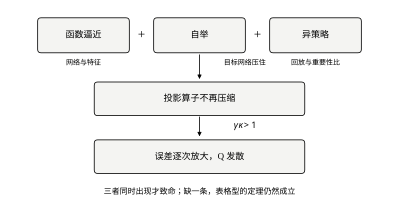
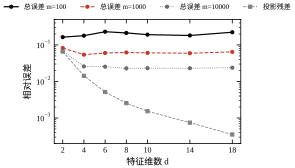
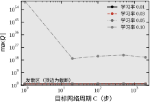
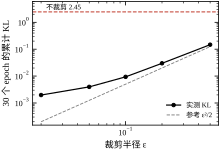
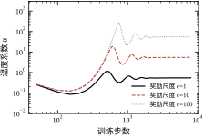
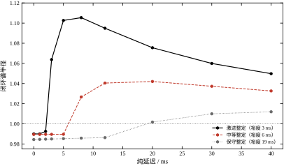

第 32 章的所有结论都建立在一个前提上：状态与动作可以列成一张表。这个前提在教科书例子里成立，在工程对象上几乎立刻破产。三笔账要一起算。
第一笔是状态数。 一个六自由度机械臂，每个关节位置粗分 10 档，状态就是 10^{6} 个；每个状态配 7 种动作，Q 表就有 7\times10^{6} 个格子。按 §32.2.6 的预算式，每对要访问上百次才能把估计压到可用精度，总共需要 7\times10^{8} 步。以 1 kHz 采样、连续不停机计算，是 7\times10^{5} s，约 8 天——这还只是一个六轴臂、每轴只分 10 档的玩具精度。若再考虑速度维、力矩维、负载维，指数立刻翻到 10^{10} 以上，那时不是“训练慢”，而是“永远训不完”。
第二笔是动作的连续性。 阀门开度、电机转矩、舵面偏角都是连续量。表格型算法每一步要做 \arg\max_a Q(s,a)，连续动作下这是一个内层优化问题：外层学策略、内层求极值，代价随动作维数指数增长。第 32 章那些“三个档位”的对象是刻意简化的，真实执行器没有档位。
第三笔是样本的来源。 第 32 章的智能体可以自己在环境里试，试坏了重启。真机上不能重启：一次超温可能报废一炉料，一次碰撞可能损坏末端执行器。当“试”本身有成本时，样本就从“免费资源”变成了“预算约束”，而这恰恰是工业场景的常态。
三笔账对应本章的三块内容：函数逼近（用参数化模型替代表格，把 10^{6} 个格子压成几百个参数）、策略梯度与演员—评论家（绕开 \arg\max，直接对策略参数求导）、离线强化学习（只用历史数据，不再在线试错）。再加上工程上绕不开的 sim-to-real 迁移，构成四块。本章按这个顺序展开，§33.2 给定义，§33.3 给推导，§33.4 给实现，§33.5 给边界，§33.6 给七组实跑。
先把一件事说清楚：“把表格换成神经网络”不等于“深度强化学习”。真正的分界线不是模型容量，而是三条性质中同时出现了几条。下一小节专门讲这件事，因为它是本章所有不稳定现象的根源。
把表格换成一个参数化函数
V_\theta(s)\approx V^{\pi}(s),\qquad \theta\in\mathbb{R}^{d},\ d\ll\lvert S\rvert \tag{33-1}
看起来只是“用更少的参数存同样的东西”。但表格有一个神经网络没有的性质：改一个格子的值，不影响别的格子。函数逼近一旦共享参数，改 V(s_1) 就必然改动 V(s_2)——这正是它省参数的原因，也是它失稳的原因。
更准确地说，表格型 TD 的收敛性来自 Bellman 算子的 \gamma-压缩性（§32.3.2）。加了函数逼近之后，我们实际做的是“投影后的算子” \Pi T，其中 \Pi 把任意函数投影到参数化函数族上。在同策略分布 \mu=d_\pi 下，\Pi T 仍是压缩的，压缩因子不超过 \gamma；一旦换成异策略分布 \mu\ne d_\pi，压缩性就要乘一个密度比因子
\|\Pi T V_1-\Pi T V_2\|_{\mu}\ \le\ \gamma\,\kappa\,\|V_1-V_2\|_{\mu}, \qquad \kappa=\Big\|\tfrac{d_\pi}{\mu}\Big\|_{\mu}^{1/2} \tag{33-2}
\kappa 是“目标策略的访问分布”与“实际采样分布”的失配度。数据越集中在少数状态，\kappa 越大；\gamma\kappa>1 时压缩性消失，迭代变成扩张，值估计指数发散。Baird 的七状态反例就是构造了一组特征与一个异策略分布，使 \gamma\kappa 明确大于 1，值在几千步内跑到任意大——而所有实现都是“照公式写的”，没有 bug。
这就是 Sutton 与 Barto 说的致命三要素（deadly triad）：函数逼近、自举、异策略，三者同时出现时不保证收敛。 本章的算法几乎全部三者齐备，所以没有一个是“有收敛定理”的，全部靠工程手段换稳定。理解这一点，比记住 DQN 的网络结构重要得多。
顺带说明两条常见误解。其一，“用神经网络所以不稳定”是错的：线性函数逼近同样会发散（式 33-2 与网络容量无关），病根在 \kappa，不在非线性。其二，“加大数据量就能救”也是错的：发散是算子性质，数据再多只是让每一步的梯度更准，扩张的方向不变。真正的解法只有两条——改分布（让 \mu 靠近 d_\pi，即经验回放与行为策略的选择）或改算子（把自举目标冻结，即目标网络）。DQN 的两个“技巧”正好各对应一条，§33.3 会把它们还原成这两个动作。
表格型的决策规则是“取最大的那个”。连续动作下这个动作没有定义，必须换一种写法。两条路：
第一条是继续对 Q 求极值，但用优化器。 每一步解一个 \max_a Q_\theta(s,a)，用梯度上升迭代十几次。问题是控制周期只有毫秒级：1 kHz 下每毫秒要解一个非凸优化，实时性直接崩掉。这条路在慢过程（分钟级配方优化）里可用，在快回路里不可用。
第二条是把策略本身参数化，令 a=\mu_\phi(s)，然后对 \phi 求导。链式法则给出
\nabla_\phi J=\mathrm{E}_{s\sim\mu}\Big[\nabla_\phi\mu_\phi(s)^{\top}\,\nabla_a Q_\theta(s,a)\big|_{a=\mu_\phi(s)}\Big] \tag{33-3}
这就是确定性策略梯度（DPG）。它把“每步求极值”换成了“训练时算一次梯度”，在线只需前向一次网络——这是实时性的关键交换：把计算从部署期挪到训练期。
代价有两个。其一，需要 \nabla_a Q，即评论家必须对动作可微。这排除了查表型评论家和树模型，也是几乎所有连续控制算法都用神经网络的原因。其二，梯度要穿过一个还在变的近似器：Q_\theta 自己每步都在更新，式 (33-3) 里的“梯度方向”因此也在动。这相当于用一个每步都换目标的优化器去优化策略——它是 DDPG 系列不稳定的直接来源，也是后面要引入目标网络与延迟更新的原因。
还有一处工程细节值得提前说：确定性策略没有探索。\mu_\phi(s) 是一个点，不是分布，它永远不会主动试别的动作。所以 DDPG 必须在动作上加噪声（高斯或 OU 过程），而噪声的大小直接决定探索强度。这把第 32 章那个独立的“探索”问题，变成了一个必须手调的噪声参数——这是从表格型到连续控制最容易低估的一处退化。
第三笔账（样本来源）在工业场景里最硬。这里的信息结构再退一步：不是“能在线试但很贵”，而是只能拿到一份固定的历史数据集
\mathcal{D}=\{(s_k,a_k,r_k,s'_k)\}_{k=1}^{N},\qquad \text{产生它的策略 }\pi_\beta\ \text{未知且不再运行} \tag{33-4}
离线 RL 要在这份数据上直接学一个比 \pi_\beta 更好的策略，全程不与环境交互。听起来只是“把经验回放池换成一个只读文件”，实际难度完全不同。
根源是分布外动作的值没有约束。Q_\theta(s,a) 只在“数据里出现过的 (s,a)”附近被训练过；对于数据里没有的动作，网络输出完全由参数化外推决定，而 \arg\max 会主动去找那些被外推得最高的动作。这是个系统性的乐观偏差：越是没有数据的动作，越容易被高估；越被高估，越会被选；越被选，越没有数据可以纠正它。学术上叫外推误差（extrapolation error），工程上就是“策略跑到数据覆盖不到的地方，然后崩掉”。
这个现象在控制里有一个精确的对应物：用一段工况数据辨识出的模型，不能拿去做大幅机动。线性化模型在工作点附近可信，出了范围就只是外推；离线 RL 的评论家也一样。两者的处理方式也同构——限制新策略与数据分布的距离，等价于“只在工作点附近线性化”。
所以离线 RL 的全部技术难点可以压成一句话：如何在“只用固定数据”的约束下，仍然让 \arg\max 不去碰那些没有数据支撑的动作。 主流做法有三类：给 Q 加保守惩罚（压低分布外动作的值）、给策略加约束（限制与 \pi_\beta 的 KL 或支撑集距离）、用模型做保守外推（不确定性惩罚）。§33.3 会展开第一类，因为它最像控制里的“鲁棒惩罚”。
还有一个常被忽略的硬事实：固定数据集能给的上界，由覆盖度决定，不由算法决定。 若 \pi_\beta 从未在某类状态上动作过，任何“在这些状态上更好”的策略都无法被数据验证，也无法被学习，只能靠外推。数据量再大，若都集中在同一工况，覆盖度仍然是零——覆盖度问的是“有没有”，不是“多不多”。 E5 正好给了这个事实一个侧面证据：把 a^{2} 补进特征，外推误差从 0.607 降到 0.028，而数据一条没加。所以工程上的第一件事不是选算法，而是回答三个问题：这批数据是谁在什么工况下采的？覆盖了哪些边界？缺失的部分能不能补采？补不了，就必须在报告里写明“本策略仅在某某工况内有效”——这句话比任何指标都重要。
本章的概念对控制背景的读者并不陌生，只是换了名字。表 33-1 把三处对应摆出来。
表 33-1 从第32章到第33章：假设变了什么
| 维度 | 第 32 章（表格型） | 第 33 章（深度 / 离线） | 控制里的对应物 |
|---|---|---|---|
| 值函数表示 | 每状态一个数 | \theta^{\top}\phi(s) 或神经网络 | 基函数展开、神经网络辨识（第 22 章） |
| 收敛保证 | 压缩映射，有定理 | 只有经验稳定，无定理 | 标称模型下的稳定性证明 vs 实际鲁棒性 |
| 探索 | 环境内试错 | 连续动作靠加噪；离线靠数据集覆盖 | 激励信号设计（第 16 章） |
| 样本成本 | 免费、可重启 | 真机贵、离线只有一份 | 实验成本、批次间波动 |
| 失配来源 | 无（表格精确） | 泛化误差、外推误差 | 模型误差、未建模动态 |
| 主要风险 | 探索不足 | 发散、过估计、分布偏移 | 失稳、约束越界 |
三处对应里最值得记住的是第二行。第 32 章可以说“算法收敛”，第 33 章只能说“在哪些条件下没有观察到发散”。 这不是本章写得保守，而是这一层的数学现状：致命三要素齐备时，收敛性问题是开放的，所有“稳定”都是工程经验，不是定理。控制工程里早就有同样的处境——一个在标称模型上证明稳定的控制器，装到真机上仍可能因为未建模的高频动态而振铃；区别只是控制里有 \mathcal{H}_\infty、\mu 分析这类工具去量化鲁棒裕度，而 RL 目前还没有对应的、被广泛接受的量。
本章要回答的不是“哪个算法最好”，而是五个可以量化的问题。每个问题都会在 §33.6 有对应的实跑数字。
问题一：泛化误差随什么变化？ 用 d 个参数拟合 V^\pi，误差可以拆成“近似误差”（d 太小，函数族装不下真值）与“估计误差”（样本有限，参数估不准）。后者大致按 \sigma^2 d/m 下降（m 为样本数）。所以要回答的是：给定精度要求，d 与 m 该怎么配？ 只加参数不加样本，误差先降后升，这条 U 形曲线是调参时最该盯住的。
问题二：目标网络该多慢？ 目标网络的更新周期（硬更新每 C 步，或软更新系数 \tau）控制“自举目标漂移多快”。它必须与折扣视野 1/(1-\gamma) 匹配：视野越长，目标越该稳。要回答的是：\tau 与 \gamma、与回合长度之间有没有可用的经验关系？
问题三：PPO 的裁剪半径对应多大的策略变化？ 裁剪把概率比限制在 [1-\epsilon,1+\epsilon]，但真正的策略变化量是 KL 散度。要回答的是：\epsilon=0.2 在上千维动作空间里到底对应多大的 KL？ 这个换算决定了它是“温和更新”还是“几乎不更新”。
问题四：SAC 的温度系数在自动调节什么？ 熵目标 \bar{\mathcal{H}} 决定探索强度，自动调节让 \alpha 随任务难度自适应。要回答的是：\alpha 收敛到的量级与奖励尺度、动作维数是什么关系？ 说不清这个关系，换一个任务就得重调。
问题五：离线算法的保守程度怎么定？ 惩罚系数越大越安全，也越容易退化成“什么都不做”。要回答的是：有没有一个可计算的量，能在离线阶段就预估部署性能的下界？ 这是离线 RL 能否进工业现场的关键，目前只有部分答案。
后面六节按“定义—推导—实现—边界—验证—收束”走：
§33.2 给出函数逼近下的值函数、策略参数化、以及三个目标函数（TD 误差、策略梯度、熵正则）的统一写法。§33.3 推导 DQN 的两个稳定化手段为什么恰好对应“改分布”与“改算子”，DDPG 的梯度偏差，PPO 的裁剪与信赖域的关系，SAC 的温度对偶，以及离线算法（CQL 型）的惩罚项如何把分布外值压下去。§33.4 给实现细节：网络规模、回放池、目标网络更新、归一化、批量大小、梯度裁剪、评估协议。§33.5 讲边界：训练成本、仿真到现实的鸿沟、部署风险、以及本章不该用的场合。§33.6 七组实跑：线性逼近的误差分解、目标网络周期扫描、PPO 裁剪与 KL 的实测关系、SAC 温度的收敛、离线算法的外推误差、sim-to-real 的延迟鲁棒性、以及一次“训练看起来成功但部署失败”的复现。§33.7 收束成一张选型表与十条错误。
与相邻章的分工要划清：第 32 章给了表格型与全部基础定义，本章不再重复 Bellman 方程与 TD 的推导，只讲“加了函数逼近之后多了什么”；第 34、35 章讲多智能体，那时非平稳性会成为新的主要矛盾；第 36 章讲功能安全，本章末尾提到的“部署风险”在那里会有正式的分析方法。本章的定位是：把第 32 章的方法搬到参数化表示上，并诚实交代搬过去之后丢了哪些保证。
先把“函数逼近”这件事的数学形式固定下来。最一般的一层写法是线性组合
V_\theta(s)=\theta^{\top}\phi(s)=\sum_{i=1}^{d}\theta_i\,\phi_i(s),\qquad Q_\theta(s,a)=\theta^{\top}\phi(s,a) \tag{33-5}
\phi:\mathcal{S}\to\mathbb{R}^{d} 叫特征映射，\theta 是可学参数。这个形式之所以值得单独讲，是因为表格是它的一个特例：取 d=\lvert\mathcal{S}\rvert、\phi(s) 为 s 的 one-hot 向量，式 (33-5) 就退化成“每个状态存一个数”，\theta 的第 i 个分量就是第 i 个格子的值。
这个观察改变了对“深度”的理解。函数逼近不是新东西，它是把 one-hot 换成共享特征。 表格的 one-hot 特征之间完全正交，所以改一个不影响另一个；换成共享特征后，不同的 s 会激活同一批 \phi_i，于是改一个必然影响另一个。§33.1.2 说的失稳，根源就在这个“正交性丢失”，与参数是不是神经网络无关。
神经网络可以塞进同一个框架。把网络写成“特征提取器 + 线性读出”
f_\theta(s)=\underbrace{w^{\top}}_{1\times d}\underbrace{h_{\psi}(s)}_{\text{最后一层激活}} \tag{33-6}
其中 \psi 是前面所有层的权重。任何前馈网络在最后一层都是线性的，所以式 (33-5) 的结构在深层网络里依然成立，只是 \phi=h_\psi 自己也在被训练。这个“线性读出”的视角在后面很有用：它解释了为什么网络的最后一层初始化尺度、以及最后一层的梯度量级，往往比中间层更敏感。
现在把 Bellman 算子搬到参数化函数族上。设采样分布为 \mu（一个状态上的概率分布），D_\mu 是以 \mu 为对角的权重矩阵，\Phi 是把所有状态的 \phi(s) 堆成的 \lvert\mathcal{S}\rvert\times d 矩阵。加权最小二乘投影定义为
\Pi_\mu=\Phi\big(\Phi^{\top}D_\mu\Phi\big)^{-1}\Phi^{\top}D_\mu \tag{33-7}
它把任意一个值向量投到“\Phi 的列空间”里，且投的是 \mu-加权欧氏距离下最近的那个点。
参数化 TD 的不动点满足 \Pi_\mu T V_\theta=V_\theta，等价于残差与特征空间正交：
\Phi^{\top}D_\mu\big(r_\pi+\gamma P_\pi\Phi\theta-\Phi\theta\big)=0 \tag{33-8}
这是关于 \theta 的线性方程，可以直接解出来
\theta^\star=\big(\Phi^{\top}D_\mu(\Phi-\gamma P_\pi\Phi)\big)^{-1}\Phi^{\top}D_\mu\,r_\pi \tag{33-9}
式 (33-9) 就是最小二乘时序差分（LSTD）。注意它与第 32 章策略评估的线性方程 \mathbf{v}=(I-\gamma P_\pi)^{-1}r_\pi 是同一个东西：把 I 换成 \Phi 的伪逆结构，维数从 \lvert\mathcal{S}\rvert 降到 d。状态多到解不动的时候，就把“精确解”换成“在 d 维子空间里最近解”，这是函数逼近的全部内容。
代价是解不再精确。把 V_\theta=\Pi_\mu T V_\theta 与 V_\pi=T V_\pi 相减：
V_\theta-V_\pi=\Pi_\mu(TV_\theta-TV_\pi)+(\Pi_\mu V_\pi-V_\pi) \tag{33-10}
取 \mu-范数，用 \|\Pi_\mu\|_\mu=1 与 T 的 \gamma-压缩性，得
\|V_\theta-V_\pi\|_\mu\ \le\ \frac{1}{1-\gamma}\,\|\Pi_\mu V_\pi-V_\pi\|_\mu \tag{33-11}
这个式子值得逐项读。右边第一因子是 1/(1-\gamma)，与第 32 章值迭代的放大因子一模一样（§32.3.2）；右边第二项是“真值离特征空间有多远”，叫投影残差，只取决于 \phi 选得好不好，与样本量无关。所以
\text{总误差}\ \approx\ \underbrace{\frac{1}{1-\gamma}}_{\text{折扣放大}}\times\underbrace{\text{投影残差}}_{\text{表示能力}}+\underbrace{\text{估计误差}}_{\text{样本量}} \tag{33-12}
三项各有各的解法：第一项只能靠减小 \gamma（缩短视野）；第二项靠加特征、加宽度；第三项靠加数据。调参时把这三项分开看，比笼统地说“模型不够好”有用得多。
还有一处必须点明：式 (33-11) 是在 \mu-范数下成立的，而我们真正关心的是策略自己的访问分布 d_\pi。两个范数之间的换算系数就是式 (33-2) 的 \kappa。所以异策略的问题不是“投影错了”，而是“在错误的尺子上量误差”——这也解释了为什么经验回放（让 \mu 更接近历史策略的混合分布）能缓解问题，但消不掉它。

图 33-1 把三要素画成一个三角形，并标出四个算法各自站在哪里。PPO 之所以相对稳，不是因为它更先进，而是因为它主动放弃了异策略：同策略采样使 \kappa=1，三要素只中两条，压缩性保住了。DQN、SAC、CQL 都保留异策略（为了样本复用），所以必须额外付代价——DQN 用目标网络冻结自举目标，SAC 用双评论家与延迟更新压低过估计，CQL 直接给分布外动作加惩罚。这张图是全章的索引：后面每讲一个算法，都先问它把三角形的哪条边拆掉了。
本章所有算法优化的目标可以归成三类，形式不同但都是“对样本求期望再最小化”。
第一类：值误差。 最自然的是最小化 Bellman 残差的平方
J_V(\theta)=\tfrac12\,\mathrm{E}_{s\sim\mu}\Big[\big(r+\gamma V_\theta(s')-V_\theta(s)\big)^2\Big] \tag{33-13}
但式 (33-13) 有一个陷阱：目标里含 V_\theta(s')，对它求全梯度会得到“\theta 出现在两边”的方程，而且需要知道 (s,a,s') 的联合分布才能无偏估计。工程上用的都是半梯度：只对 V_\theta(s) 求导，把 r+\gamma V_\theta(s') 当常数。半梯度不是 J_V 的真梯度，但它是第 32 章 TD(0) 的严格推广，且计算只需一步样本。“用半梯度”这件事本身就是一次有偏的取舍，§33.3.1 会量化偏差有多大。
第二类：策略性能。 直接对回报求导
J_\pi(\phi)=\mathrm{E}_{\pi_\phi}\Big[\sum_{k\ge0}\gamma^{k}r_k\Big],\qquad \nabla_\phi J_\pi=\mathrm{E}_{\pi_\phi}\Big[\sum_{k\ge0}\gamma^{k}G_k\,\nabla_\phi\ln\pi_\phi(a_k\mid s_k)\Big] \tag{33-14}
这是第 32 章式 (32-35) 的原样搬运，本章不再推导。它不需要值函数，但方差极大（§32.6.6 已量化：奖励 100 量级时乘子差 90 倍），所以实际用的是“减基线”或“用评论家替代 G_k”的版本。
第三类：熵正则。 在回报里加一项策略熵
J_{\mathrm{ent}}(\pi)=\mathrm{E}_{\pi}\Big[\sum_{k\ge0}\gamma^{k}\big(r_k+\alpha\,\mathcal{H}(\pi(\cdot\mid s_k))\big)\Big], \qquad \mathcal{H}=-\mathrm{E}_{a\sim\pi}\ln\pi(a\mid s) \tag{33-15}
\alpha 是温度。这一项的作用是在目标里显式给“多试几个动作”付钱：熵越大，策略越分散，探索越充分。\alpha\to0 时退化成普通回报；\alpha\to\infty 时策略趋于均匀随机。第 32 章的 \varepsilon-贪心是“外加的探索”，式 (33-15) 是“内生进目标的探索”——前者需要手调衰减表，后者可以自动调节（§33.3.4 会给出对偶推导）。这也是 SAC 比 DDPG 少调一个关键超参的原因。
三类目标的关系可以一句话概括：第一类学“这个状态值多少”，第二类学“这个动作概率该多大”，第三类在第二类上加了一个“别太确定”的罚项。 本章的 DQN 属第一类，PPO 属第二类，SAC 与 CQL 属第三类（CQL 在第三类上再加保守项）。
离散动作的策略参数化很直接：\pi_\theta(a\mid s)=\mathrm{softmax}(z_\theta(s))_a。连续动作有四种常见写法，差别全在“如何处理动作边界”。
表 33-2 连续/离散策略参数化的四种写法
| 写法 | 形式 | \ln\pi 是否有闭式 | 探索 | 典型算法 |
|---|---|---|---|---|
| 离散 softmax | \exp z_a/\sum_b\exp z_b | 有 | 内在 | DQN（策略由 \arg\max 导出） |
| 对角高斯 | \mathcal{N}(\mu_\phi(s),\sigma_\phi^2(s)) | 有 | 内在，\sigma 可学 | PPO |
| 压缩高斯 | a=\tanh u,\ u\sim\mathcal{N}(\mu,\sigma^2) | 有，需雅可比修正 | 内在，且自动有界 | SAC、PPO（连续） |
| 确定性 | a=\mu_\phi(s) | 不需要 | 无，靠外加噪声 | DDPG、TD3 |
第三种是工程上最常用的，值得写出完整式子。令 u\sim\mathcal{N}(\mu,\sigma^2)、a=\tanh u，则
\ln\pi(a\mid s)=\ln\mathcal{N}\big(u;\mu,\sigma^2\big)-\sum_{i=1}^{m}\ln\big(1-\tanh^2 u_i\big) \tag{33-16}
第二项是变量变换的雅可比行列式，不能漏。漏掉它的后果很具体：在 a 接近 \pm1 时 \tanh 的导数趋于零，密度会被算成一个有限值而不是趋于无穷，策略梯度会把概率质量推向边界而自己不知道——表现是“训练后动作长期贴着限幅跑”。
为什么不直接用截断（把超界的动作夹到 [-1,1]）？因为截断会让多个不同的 u 映射到同一个 a，概率密度在边界处堆积成一个原子，\ln\pi 无定义，梯度失效。\tanh 压缩是“可逆且有界”的最小代价方案，这也是它几乎成了连续控制标配的原因。
离线场景要额外定义三个量，否则“数据不够”这句话无法量化。
支撑集：给定数据集 \mathcal{D}，定义行为分布 \mu_\beta 为 \mathcal{D} 上的经验分布。状态 s 处动作的条件支撑集是“离某个数据动作足够近”的动作集合：
\mathrm{supp}\,\mu_\beta(\cdot\mid s)=\bigcup_{(s',a')\in\mathcal{D},\ \|s'-s\|<\delta_s}\big\{a:\ \|a-a'\|<\delta_a\big\} \tag{33-17}
通俗说就是“这个状态下，数据里见过的动作及其邻域”。离线 RL 的一切问题都发生在支撑集之外。
覆盖度：对每个 (s,a) 统计有效样本数 n(s,a)。n 小的地方，Q 的估计方差大；n=0 的地方，Q 完全由外推决定。§32.6.5 那张覆盖率的账（扣掉物理上不可达的格子）在这里要重做一遍，因为现在的“格子”是连续空间里的一个邻域。
外推距离：d_{\mathrm{out}}(a)=\min_{a'\in\mathrm{supp}\,\mu_\beta(\cdot\mid s)}\|a-a'\|。它是“这个动作离已知数据多远”的度量，也是惩罚项该加多少的依据。
这三个量合起来给出过估计的放大账。假设每步 Q 被高估 \delta，沿 H 步累积，回报的高估量是
\delta\sum_{k=0}^{H-1}\gamma^{k}=\delta\,\frac{1-\gamma^{H}}{1-\gamma}\ \xrightarrow{H\to\infty}\ \frac{\delta}{1-\gamma} \tag{33-18}
\gamma=0.99 时放大 100 倍。这意味着每步 0.01 的微小高估，在 \gamma=0.99 的策略里会变成 1.0 的回报虚高，足以把最优动作换掉。式 (33-18) 是离线 RL 里所有保守惩罚的定价依据：惩罚不是“正则化技巧”，它是在抵消这个 1/(1-\gamma) 的放大。
仿真到现实的差距，可以形式化成“环境参数不确定”。设环境由一个参数 \xi 决定（质量、摩擦系数、执行器延迟、传感器噪声），\xi\in\Xi，真实环境对应某个未知的 \xi_{\mathrm{real}}。三种常见做法对应的优化问题不同：
\text{名义：}\ \max_\pi J(\pi;\xi_0),\qquad \text{域随机化：}\ \max_\pi \mathrm{E}_{\xi\sim p}\big[J(\pi;\xi)\big],\qquad \text{鲁棒：}\ \max_\pi \min_{\xi\in\Xi}J(\pi;\xi) \tag{33-19}
这三者不是一回事，混用会出事故。 名义优化只保证在 \xi_0 上最好，\xi_{\mathrm{real}}\ne\xi_0 时毫无保证；域随机化优化的是平均性能，它允许“在少数参数下很差”，只要平均拉得回来；鲁棒优化保证最坏情况，但代价是保守——在 \xi 的整个集合上取最坏，往往会把标称性能压低很多。
工程上还有一个更隐蔽的区别：域随机化不覆盖“结构差异”，只覆盖“参数差异”。 仿真里没有的效应（齿轮间隙、皮带迟滞、网络丢包）不会因为把摩擦系数随机化就出现。所以“随机化范围设得很宽”并不等于“迁移得好”，这一点在 §33.5.2 会用一个延迟的例子量化。
延迟是最典型的例子，也是最容易被忽略的。设回路带宽 100 Hz（\omega=2\pi\times100），纯延迟 1 ms，相位滞后是
\varphi=-\omega T_d=-0.628\ \text{rad}=-36^{\circ} \tag{33-20}
36^{\circ} 已经吃掉了相位裕度的一大半。 仿真里如果没建模这 1 ms，策略在仿真里稳、上机就振——这不是“随机化没调好”，而是模型结构里少了一项。
线性逼近 V_\theta=\theta^{\top}\phi(s) 里有两处人为选择：特征 \phi 长什么样、维数 d 取多大。核方法与高斯过程恰好把这两处各换掉一个，对照一下能看清“深度”到底买到了什么。
核方法换掉的是“特征谁定”。 如果算法只通过内积用到特征（LSTD、岭回归都属于这一类），就可以把 \phi(s)^{\top}\phi(s') 整体替换成核函数 k(s,s')，从不显式构造 \phi。表示定理保证最优解落在样本张成的子空间里
V(s)=\sum_{i=1}^{m}\alpha_i\,k(s_i,s)
于是特征维数可以是无穷，有效维数却只有样本数 m。这句话与 §33.2.1 的“表格是 one-hot 特例”是同一件事的两端：表格的核是 \delta 核（只有同一个格子内积为 1），核方法把 \delta 换成光滑核，深度网络则把核本身也变成可学的。
高斯过程再换掉“d 取多大”。 把 \theta 看成高斯先验、观测看成带噪线性读出，后验均值就是上面那个形式，而后验方差
u^{2}(s)=k(s,s)-k(s)^{\top}\big(K+\sigma^{2}I\big)^{-1}k(s)
直接给出“这个状态没见过的程度”。这正是 §33.3.6 里保守惩罚想定价、却只能用一个常数 D 粗略替代的量。如果 GP 的 u(s,a) 可算，离线 RL 的惩罚系数就不必猜，直接取 \beta\,u(s,a) 即可——这是“乐观/保守”两类算法在理论上的原型。
代价也很清楚：训练要解 m\times m 的线性系统，复杂度 O(m^{3})，内存 O(m^{2})，推理要遍历全部样本，O(m)。m=10^{4} 时一次求解已是 10^{12} 量级，m=10^{6} 完全不可行。深度网络把这笔账换成了“O(d) 推理 + 一次性训练”，代价是丢掉了 u 这个不确定性量。
三条实用判据：
一句话总结这三层的关系：表格是 \delta 核，核方法是固定核，深度网络是学出来的核；三层共用式（33-5）的线性读出，差别只在 \phi 的自由度与样本效率。
最后给一个可以拿笔算的规模关系，它决定了“网络该多大、数据该多少”。
参数化的估计误差大致按 \sigma^{2}d/m 下降（d 个参数、m 个样本、单样本噪声方差 \sigma^2），而近似误差随 d 增大而下降。两者相加是一个 U 形，最优点在两条曲线斜率相反的地方。实用上只需要一个量级判断：若要求均方误差不超过 \epsilon^2，则
m\ \gtrsim\ \frac{\sigma^{2}d}{\epsilon^{2}} \tag{33-21}
代入一组具体数字。取 \sigma=1（奖励归一化后）、\epsilon=0.05、d=10^{4}（一个小型网络），得 m\gtrsim4\times10^{6} 步。以 1 kHz 采样连续跑，是 4000 s，约 67 分钟——这就是“一个一万参数的网络、要到 5% 精度、需要一小时不间断数据”的量级估计（只保留量级，未计常数因子，工程上还要再乘几倍）。
对照第 32 章的表格：d=\lvert\mathcal{S}\rvert=10^{6} 时同样精度需要 m\gtrsim4\times10^{8} 步，是前者的 100 倍。函数逼近省下的正是这 100 倍样本，代价是式 (33-12) 里的投影残差与式 (33-2) 里的 \kappa。一笔换一笔，没有免费的午餐。
表 33-3 把本节新增的符号收在一起，后面各节直接引用。
表 33-3 本章符号与含义
| 符号 | 含义 | 与第 32 章的对应 |
|---|---|---|
| \phi(s) | 特征映射，d 维 | 表格的 one-hot（d=\lvert\mathcal{S}\rvert） |
| \Pi_\mu | \mu-加权最小二乘投影 | 无（表格下投影是恒等） |
| \kappa | 分布失配度 \lVert d_\pi/\mu\rVert_\mu^{1/2} | 无（表格下 \kappa=1） |
| \mu_\beta | 行为策略/数据经验分布 | 第 32 章的 \varepsilon-贪心策略 |
| d_{\mathrm{out}} | 动作到数据支撑集的距离 | 无 |
| \alpha | 熵温度 | 第 32 章 \varepsilon 的连续版替代 |
| \xi | 环境参数 | 第 32 章固定的 P、r |
式（33-9）给出的是闭式解，而工程实现几乎都用随机梯度。两者收敛到同一个投影 Bellman 不动点，差别只在“用多少计算换多少样本”。
闭式解（LSTD）把 m 条样本一次性压成一个 d\times d 矩阵求逆，复杂度 O(md^{2}+d^{3})，得到的估计方差约为 \sigma^{2}d/m。随机梯度（半梯度 TD）每步只花 O(d)，但要对同一批数据扫描多遍，且步长带来一个“收敛不完”的残差地板。换句话说：闭式解把误差全部押在样本量上，随机梯度把误差分一部分给步长。
数值上有一个必须知道的量：矩阵 \Phi^{\top}D_\mu(\Phi-\gamma P_\pi\Phi) 的条件数大约随 1/(1-\gamma\kappa) 增长。\gamma\kappa\to1 时它趋于奇异，解对样本噪声极度敏感——这就是“接近发散边界时 LSTD 也不可信”的原因，与式（33-2）是同一件事的两个面。E1 里加的 10^{-6} 岭项只起数值稳定作用，它会把解往原点拉一点，属于偏差，不属于精度。
闭式解还有一个在线版本：用 Sherman–Morrison 公式递推求逆，每步 O(d^{2})，不需要存全部样本。它在 \mu 固定、特征固定时很好用；一旦特征也在学（网络），矩阵每步都变，递推就失去意义。
四条判断：
DQN 的损失函数是
L(\theta)=\mathrm{E}_{(s,a,r,s')\sim\mathcal{D}}\Big[\big(r+\gamma\max_{a'}Q_{\theta^-}(s',a')-Q_\theta(s,a)\big)^2\Big] \tag{33-22}
注意目标里用的是 \theta^- 而不是 \theta。这个下标是全部稳定性的来源，值得单独解释。
如果不加 \theta^-，目标 y=r+\gamma\max_{a'}Q_\theta(s',a') 与待优化参数是同一套。此时梯度下降在追一个自己也在动的目标：\theta 一更新，y 立刻跟着变，损失可能不降反升。更糟的是，这与式 (33-2) 的扩张条件叠加——自举让误差按 \gamma 放大，函数逼近让放大在特征空间里串扰，异策略让尺子错位，三者相乘。
加上 \theta^- 之后，在一段固定周期内目标是常数，问题退化成“用回归拟合一批固定标签”，这是一个凸的（线性情形）或至少是良定的监督学习问题，有唯一最优、误差单调下降。每隔 C 步把 \theta 拷给 \theta^-，再重新开始。换句话说，目标网络把“追移动目标”改成了“分段追静止目标”，每段的误差不发散，段间靠拷贝推进。软更新是同一思想的光滑版本
\theta^-\leftarrow\tau\theta+(1-\tau)\theta^-,\qquad \tau\ll1 \tag{33-23}
它对应一阶低通，等效时间常数约 1/\tau 步。\tau=0.005 相当于 200 步的滑动平均。
经验回放做的事不一样，它改的是分布。 不用回放时，样本按时间顺序产生，相邻样本高度相关（\mu 集中在当前轨迹附近），且用完即弃。回放池做三件事：
但要说清界限：回放让 \mu 变宽，却不能让 \mu=d_\pi。池子里永远混着旧策略的数据，\kappa 只是从“很大”降到“接近 1”，不等于 1。所以 DQN 仍然站在致命三要素的三角形里（图 33-1），只是把最尖的那个角磨钝了。这就是为什么 DQN 在各种任务上“通常能跑”，但没有收敛定理。
第 32 章给过两动作时的数：\mathrm{E}[\max]\approx0.564\sigma。一般地，若 n 个动作的 Q 估计各带独立同分布、标准差 \sigma 的零均值误差，则最大值的期望偏差是
\mathrm{E}\Big[\max_{1\le i\le n}\hat{Q}_i-\max_{1\le i\le n}Q_i\Big]\approx\sigma\cdot m_n, \qquad m_2=0.564,\ m_3=0.846,\ m_4=1.029,\ m_{10}=1.539 \tag{33-24}
动作越多，偏差越大。这不是小量：四动作时每步高估 1.03\sigma，十动作时 1.54\sigma。再套式 (33-18) 的 1/(1-\gamma) 放大，\gamma=0.99 时分别放大成 103\sigma 与 154\sigma。若 \sigma=0.1（一个训练得还不错的评论家），回报虚高就是 10 到 15——足以让策略系统性地偏好“估计噪声大”的动作。
双重 Q 学习（Double DQN）把“选动作”和“评动作”拆开：
y=r+\gamma\,Q_{\theta^-}\Big(s',\ \arg\max_{a'}Q_\theta(s',a')\Big) \tag{33-25}
选动作用在线网络，评价值用目标网络。两个网络的误差若不相关，\max 带来的正偏差就被大幅抵消。代价是引入了一点负偏差（因为选出的动作在目标网络眼里未必最好），但负偏差比正偏差安全：宁可低估一个好动作，也不要高估一个坏动作。
回到式 (33-3)。它的推导只用了链式法则，看起来无懈可击，但有一个隐含前提：Q_\theta\approx Q^{\mu_\phi}。实际训练中评论家总有误差 \varepsilon(s,a)，于是
\nabla_\phi J=\mathrm{E}\big[\nabla_\phi\mu_\phi^{\top}\nabla_a(Q^{\mu_\phi}+\varepsilon)\big] =\underbrace{\mathrm{E}\big[\nabla_\phi\mu_\phi^{\top}\nabla_a Q^{\mu_\phi}\big]}_{\text{想要的}} +\underbrace{\mathrm{E}\big[\nabla_\phi\mu_\phi^{\top}\nabla_a\varepsilon\big]}_{\text{偏差}} \tag{33-26}
关键在于第二项不是零：只要 \varepsilon 随动作变化，它就会被策略“利用”。更具体地说，函数逼近在数据稀疏处误差大，而 \arg\max 恰好把策略推向那些地方——偏差项因此系统性为正，策略会主动钻进“评论家最不确定的角落”。这与 §33.2.5 的离线外推误差是同一个机制，只是发生在连续动作的邻域里。
TD3 用三处修改压这个偏差，每一处都对应式 (33-26) 里的一项：
其一，双评论家取最小。 训练两个独立的 Q，目标取 \min(Q_1,Q_2)。这与 Double DQN 同一动机，但更彻底：直接取小，把正偏差压成负偏差。
其二，目标策略平滑。 在目标动作上加截断噪声
a'=\mathrm{clip}\Big(\mu_{\phi^-}(s')+\mathrm{clip}(\epsilon,-c,c),\ a_{\mathrm{lo}},a_{\mathrm{hi}}\Big),\qquad \epsilon\sim\mathcal{N}(0,\sigma^2) \tag{33-27}
它防止评论家在“某个动作上恰好有个窄峰”处过拟合——策略无法靠精准命中那个峰来刷分，因为目标被抹平了一个 c 宽的邻域。这是对“\nabla_a\varepsilon 在窄峰处最大”的直接反制。
其三，延迟更新。 评论家更新若干次，演员才更新一次。理由是式 (33-26)：偏差项正比于评论家的误差，评论家没学好之前，演员怎么更新都是在追噪声。先让尺子稳，再量东西。
三处修改合起来，把 DDPG 从“经常崩”变成“通常能跑”，但仍然没有定理。这就是本章的常态：所有“改进”都是在削偏差/削方差，不是在补证明。
PPO 的出发点是一个约束优化：希望每步策略变化不要太大，形式上写成 \mathrm{E}[\mathrm{KL}(\pi_{\mathrm{old}}\|\pi_\theta)]\le\delta。直接解这个约束需要算 Fisher 矩阵的逆（自然梯度），代价高；PPO 用一个更便宜的手段近似它——裁剪重要性采样比。
令
r_t(\theta)=\frac{\pi_\theta(a_t\mid s_t)}{\pi_{\theta_{\mathrm{old}}}(a_t\mid s_t)} \tag{33-28}
则裁剪目标为
L^{\mathrm{CLIP}}(\theta)=\mathrm{E}_t\Big[\min\big(r_t(\theta)A_t,\ \mathrm{clip}(r_t(\theta),1-\epsilon,1+\epsilon)A_t\big)\Big] \tag{33-29}
它的作用可以一句话说清：当优势为正时，把 r 的上行梯度截断在 1+\epsilon；当优势为负时，截断在 1-\epsilon。 超过这个范围，再怎么提高概率也不给额外奖励，于是策略不会一步跨太远。
那么 \epsilon=0.2 到底对应多大的策略变化？对单个动作、r 在 1\pm\epsilon 内，KL 的二阶近似是
\mathrm{KL}\big(\pi_{\mathrm{old}}\,\|\,\pi_\theta\big)\approx\tfrac12\mathrm{E}_{a\sim\pi_{\mathrm{old}}}\big[(r-1)^2\big]\le\tfrac{\epsilon^2}{2} \tag{33-30}
\epsilon=0.2 给每维 0.02 nats。这个数看着很小，但对 m 维独立动作，KL 是各维之和，上界变成 0.02m：m=6 时约 0.12 nats，m=20 时约 0.4 nats。所以“\epsilon=0.2”在低维任务里是温和更新，在高维任务里可能是很激进的更新——这也是为什么高维任务常把 \epsilon 调到 0.1 以下，或者干脆改回自适应 KL。
优势函数 A_t 的估计用 GAE（广义优势估计）：
\hat{A}_t=\sum_{l\ge0}(\gamma\lambda)^{l}\,\delta_{t+l},\qquad \delta_t=r_t+\gamma V(s_{t+1})-V(s_t) \tag{33-31}
\lambda 是一个偏差—方差旋钮：\lambda=0 退化成一步 TD 误差（偏差大、方差小），\lambda=1 退化成蒙特卡洛回报减基线（无偏、方差大）。工程上常用 0.95，含义是“有效视野约 1/(1-\gamma\lambda)”，\gamma=0.99、\lambda=0.95 时约 20 步。这个数与 \gamma 单独给出的 100 步不是一回事，报参时必须写清是哪一个。
最大熵目标 (33-15) 的最优策略有闭式。对固定 s，把 \sum_a\pi(a\mid s)(Q(s,a)-\alpha\ln\pi(a\mid s)) 对 \pi 求导并加单纯形约束，得
\pi^\star(a\mid s)=\frac{\exp\big(Q(s,a)/\alpha\big)}{\sum_{a'}\exp\big(Q(s,a')/\alpha\big)} \tag{33-32}
即“软最大”。\alpha 越小越接近 \arg\max，越大越接近均匀。注意这不是启发式，是目标函数 (33-15) 的精确解——熵项把硬的 \max 换成了软的 log-sum-exp，这也是 SAC 名字里“soft”的来历。
温度 \alpha 可以自动定。约束写成“平均熵不低于目标 \bar{\mathcal{H}}”，即 \mathrm{E}[-\ln\pi(a\mid s)]\ge\bar{\mathcal{H}}，其对偶变量就是 \alpha。对偶上升给出
\alpha\leftarrow\alpha\cdot\exp\Big(-\beta\big[\ln\pi(a\mid s)+\bar{\mathcal{H}}\big]\Big) \tag{33-33}
含义要按对偶的正负号读：熵低于目标时 \ln\pi+\bar{\mathcal{H}}>0，对 \alpha 的梯度为负，\alpha 增大，逼策略分散；熵高于目标时反过来，\alpha 减小。目标熵常取 \bar{\mathcal{H}}=-m（m 为动作维数），即“每维留 1 nat 的不确定性”——这个取值与奖励尺度无关，所以能跨任务复用。
评论家一侧用两个 Q 取最小，理由与 TD3 相同（式 33-24 的正偏差）。SAC 的三件套——熵正则、双评论家、软更新——分别解决探索、过估计、目标漂移，三件事彼此独立，可以单独替换。 这是它比 DDPG 稳的工程原因，也是它超参更多的原因：\alpha 的初值、目标熵、双评论家的初始化，每一项都要管。
离线算法的核心是把“分布外动作的 Q”压下去。CQL 型目标写成
J_{\mathrm{CQL}}(\theta)=\underbrace{\alpha\Big(\mathrm{E}_{s\sim\mathcal{D}}\big[\log\textstyle\sum_a\exp Q_\theta(s,a)\big]-\mathrm{E}_{(s,a)\sim\mathcal{D}}\big[Q_\theta(s,a)\big]\Big)}_{\text{保守项}} +\underbrace{\tfrac12\mathrm{E}_{\mathcal{D}}\big[(Q_\theta(s,a)-y)^2\big]}_{\text{常规 TD 损失}} \tag{33-34}
保守项是两个期望之差。第一项是“所有动作的 Q 的软最大”，第二项是“数据动作的 Q”。最小化它们的差，等价于同时做两件事：把数据动作的 Q 抬高，把其余动作的 Q 压低。 两者之差越大，惩罚越强；\alpha\to0 时退化成普通离线 TD；\alpha\to\infty 时分布外动作的 Q 趋于 -\infty，\arg\max 只能落在支撑集内。
现在可以给这个 \alpha 定价了。由式 (33-18)，每步 Q 的高估 \delta 会被放大 1/(1-\gamma)。若保守项能把分布外动作的 Q 压低 D，那么只要
D\ \gtrsim\ \frac{\delta}{1-\gamma} \tag{33-35}
就能保证 \arg\max 不会翻到支撑集外。这就是 \alpha 该怎么选的定量依据：它不是无量纲的“正则化强度”，而是要与“评论家误差 \delta”和“折扣放大 1/(1-\gamma)”一起算的物理量。\gamma=0.99、\delta=0.1 时，需要压低 10 个单位——这解释了为什么离线算法在长视野任务上总要配很大的 \alpha。
三处代价必须一并说清。其一，过度保守。 \alpha 太大时，所有动作的 Q 都被压低，策略退化成“什么都不做”或“复制行为策略”。其二，惩罚的估计有偏。 式 (33-34) 的第一项需要对全部动作求软最大，连续动作下只能用采样近似，采样不足时惩罚方向会歪。其三，它保的是值、不是行为。 Q 被压对不等于策略在真机上就好，中间还隔着“策略能否被准确表示”这一层。
把本节内容收进表 33-4。这张表的用法是：看到一个不稳定的训练曲线，先在表里找到对应行，再问“它拆的那条边，我的实现里真的拆掉了吗”。
表 33-4 四个算法的稳定化手段与失效模式
| 算法 | 拆哪条边 | 具体手段 | 新增关键超参 | 典型失效 |
|---|---|---|---|---|
| DQN | 自举 + 分布 | 目标网络、经验回放、Double Q | C 或 \tau、池容量 | 过估计、回放池过旧 |
| DDPG | 自举 | 目标网络（软更新） | \tau、探索噪声 \sigma | 评论家过拟合窄峰、策略钻误差 |
| TD3 | 自举 | 双评论家取小、目标平滑、延迟更新 | \tau、\sigma、c、更新比 | 过度平滑导致学不快 |
| PPO | 异策略（直接放弃） | 同策略采样、裁剪、GAE | \epsilon、\lambda、每批回合数 | 样本效率低、裁剪过紧 |
| SAC | 自举 | 双评论家、软更新、熵正则 | \alpha 初值、\bar{\mathcal{H}} | 温度失控、Q 塌缩 |
| CQL | 分布外 | 保守惩罚 | \alpha | 过度保守、惩罚估计有偏 |
表里最值得对照的是第三列与第五列。每个算法新增的超参，恰好就是它拆边时引入的那个“补偿量”——DQN 的 C 是“目标多久换一次”，TD3 的 c 是“峰抹多平”，PPO 的 \epsilon 是“一步走多远”，CQL 的 \alpha 是“外推压多低”。这些量没有一个是“调大了更好”或“调小了更好”，全部存在最优区间，而且最优值随任务变。这是深度 RL 调参困难的数学根源：它不是参数多，而是每个参数都在补偿一个没有定理支撑的近似。
§33.2.3 的三个目标函数决定了“优化什么”，还有一个量决定“回报怎么估”，它不改算子，只改估计的偏差与方差之比，而且这个旋钮是连续的。
n 步回报把自举往后推 n 步：
G_t^{(n)}=\sum_{k=0}^{n-1}\gamma^{k}r_{t+k}+\gamma^{n}V_\theta(s_{t+n})
n=1 就是 TD(0)，n 等于回合长度就是蒙特卡洛。偏差随 n 降（自举次数少），方差随 n 升（累加的随机奖励多），第 32 章 E3 那张“MC 的标准差是 TD 的 2.77 倍、但 RMSE 反而低”的表，就是这条曲线两端的两个点。
连续版本是资格迹。TD(\lambda) 用一条迹向量
z_t=\gamma\lambda\,z_{t-1}+\nabla_\theta V_\theta(s_t)
把“往后看 n 步”压成“每步 O(d) 的递推”，\lambda=0 退化为 TD(0)，\lambda=1 逼近 MC。PPO 里的 GAE(\lambda) 是同一思想在优势函数上的版本：\lambda 越小越偏、方差越低，越大越无偏、方差越高。它与控制里的遗忘因子是同一个东西——递推最小二乘里 \lambda<1 让旧数据权重指数衰减，这里 \lambda<1 让远期的自举误差指数衰减。
三条工程注意：
深度 RL 的第一次失败，八成出在输入尺度上。状态里混着角度（10^{-1} rad）、角速度（10^{0} rad/s）、位置（10^{0} m）、力（10^{2} N），直接喂进网络会让第一层的梯度被大量纲分量主导——这不是“训练慢”，是“只学了那几个大量纲通道”。
做法是运行均值—标准差归一化：维护每个状态分量的滑动均值 \bar{s}_i 与标准差 \sigma_i，输入前做 (s_i-\bar{s}_i)/\max(\sigma_i,10^{-3})。注意必须在训练中滚动更新，而不是用离线统计量，因为策略变化会让状态分布漂移。部署时冻结最后一组统计量，并把它一起打包进模型文件——漏了这一步，线上与训练就用了两套尺度。
最后一层的初始化另有一条经验：输出初始值应接近“回报的量级”而不是 0。若 Q 初值全为 0，而真实回报是 10^{2} 量级，网络要花很多步才能把输出抬上去；更糟的是，在抬升过程中所有动作的 Q 都挤在 0 附近，\arg\max 由数值噪声决定，策略相当于随机。常见做法是把最后一层权重初始化成小值（如 \pm3\times10^{-3}），偏置设为 0，或者用“回报的均值”做偏置初值。这一条与第 32 章式 (32-41) 的乐观初始化是同一个道理，只是换到了网络参数上。
回放池存五元组 (s,a,r,s',d)，其中 d 是终止标志。d 必须存，不能靠“s' 是终止状态”反推：有些环境的终止状态与“到达目标”不是一回事（超时截断、越界终止），把截断当成终止会让自举目标少算后续回报，值估计系统性偏低。这类错误不会报错，只会让曲线“看起来还行但差一点”。
容量与采样方式有两条经验：
容量取 10^{5}–10^{6} 步。 太小则样本相关性去不掉（退化成在线学习），太大则池子里混着大量旧策略的数据，\kappa 反而变大（式 33-2）。容量不是越大越好，它对应“记忆多长”这个时间尺度。
优先采样（prioritized replay）按 p_i\propto\lvert\delta_i\rvert^{\alpha_p} 抽，\alpha_p=0.6 常用。 它让“预测错得多的样本”被多抽几次，收敛更快。代价是分布被改变了，必须用重要性权重 w_i=(1/(Np_i))^{\beta} 修正，\beta 从 0.4 线性退火到 1。不做修正的优先采样是有偏的，这一点在实现里最容易被省掉。
硬更新每 C 步拷一次，软更新每步按式 (33-23) 混合。两者的换算很直接：软更新的等效周期约 C_{\mathrm{eff}}\approx1/\tau。\tau=0.005 相当于硬更新 C\approx200；\tau=0.001 相当于 C\approx1000。
周期的选择要与两个时间尺度匹配。其一是折扣视野 1/(1-\gamma)：视野越长，目标里包含的未来步越多，目标漂移的影响越大，周期应越长。其二是策略改进的速度：周期太长，目标落后于策略，学得慢；周期太短，退化成无目标网络。工程经验是 C 取 10^{3}–10^{4} 步、\tau 取 0.001–0.01，再按回合长度微调。C 大致取“一个回合的 1/10 到 1 倍”是个可用的起点——回合内不换目标，回合之间换几次。§33.6.2 会在同一任务上扫 C，给出“太长与太短各自怎么坏”的实测曲线。
一个可用的默认组合是：批量 256、学习率 3\times10^{-4}（Adam）、梯度范数裁剪 10、目标网络软更新 \tau=0.005。四个数各有各的作用，不要一起调。
批量决定梯度噪声：太小（32）时每步更新方向抖动大，值估计不稳；太大（4096）时更新次数变少，同样样本量下学得更慢。有效批量应与学习率一起调：批量翻倍、学习率按 \sqrt{2} 提高是常见的配套。
学习率在演员与评论家之间应当分开。评论家可以大一些（10^{-3}），演员要小（10^{-4}），理由是式 (33-26)：演员的梯度依赖评论家的准确性，评论家没学好之前，演员大步走只会放大偏差。这与第 32 章 Actor-Critic 的双时间尺度 \alpha_w\gg\alpha_\theta 是同一条原则。
梯度裁剪是防爆的最后一道。它不改变正常步的方向，只在上限处截断；发现“裁剪频繁触发”说明前面的学习率或归一化有问题，此时调裁剪阈值是治标。
奖励除以一个常数 c 看起来无害，它确实不改变最优策略（正线性变换保序）。但对熵正则算法，它会改变温度的最优值。看式 (33-32)：\pi^\star\propto\exp(Q/\alpha)。若把奖励缩小 c 倍，Q'=Q/c，要让同一个 \pi^\star 仍是解，必须有
\alpha'=\alpha/c \tag{33-36}
所以奖励缩 10 倍，温度也必须缩 10 倍，否则策略会突然变得“更确定”或“更随机”。 自动调温（式 33-33）能自己应对这个变化——这正是它比固定 \alpha 好用的地方：\alpha 会随 Q 的量级自动重标定。但如果用的是固定 \alpha 的实现，改奖励尺度却不改 \alpha，训练结果会莫名其妙地变差，而且很难查。
奖励缩放的另一个作用是限制 Q 的量级。Q 的典型大小约为 r_{\max}/(1-\gamma)：\gamma=0.99、每步奖励 1 时是 100，若每步奖励 1000 就是 10^{5}——此时 float32 的绝对分辨率约 10^{-2}（相对精度 10^{-7} 乘上量级），已经与单步奖励同阶，梯度更新会被舍入吃掉，表现为“损失在降、策略不动”。把每步奖励归一到 O(1)，Q 就落在 10^{2} 量级，留出四个数量级的余量。
下面这段是 DQN 的核心循环，四十几行，省掉了环境与网络定义。它的价值不在“能跑”，而在标出了四个必须存在的步骤：归一化、存 d、目标网络、双 Q。
import torch, torch.nn.functional as F
def train_step(batch, q, q_targ, opt, gamma=0.99):
s, a, r, s2, d = batch # d 为终止标志
with torch.no_grad():
a2 = q(s2).argmax(1, keepdim=True) # 在线网络选动作
y = r + gamma * (1.0 - d) * q_targ(s2).gather(1, a2).squeeze(1)
loss = F.smooth_l1_loss(q(s).gather(1, a.view(-1, 1)).squeeze(1), y)
opt.zero_grad()
loss.backward()
torch.nn.utils.clip_grad_norm_(q.parameters(), 10.0)
opt.step()
return float(loss)
def soft_update(q, q_targ, tau=0.005):
with torch.no_grad():
for p, pt in zip(q.parameters(), q_targ.parameters()):
pt.mul_(1.0 - tau).add_(tau * p)
def run(env, q, q_targ, opt, buf, steps=100_000, warmup=1_000):
s = env.reset()
for t in range(steps):
eps = max(0.01, 0.3 * (1.0 - t / (0.6 * steps)))
a = env.sample_action(q, s, eps) # 归一化后的状态
s2, r, done, _ = env.step(a)
buf.push(s, a, r / env.r_scale, s2, float(done))
if buf.size >= warmup:
train_step(buf.sample(256), q, q_targ, opt)
soft_update(q, q_targ)
s = env.reset() if done else s2三处细节与正文对应：r / env.r_scale 是 §33.4.5 的奖励缩放；1.0 - d 保证终止处不自举，对应 §33.4.2 存的 d；q_targ 全程只读，对应 §33.4.3 的目标网络。双 Q 在这里体现为“选动作用 q、评价值用 q_targ”（式 33-25），不是两套网络参数。
训练曲线好看不等于策略好用。下面三种做法都会造出“假成功”，必须避开。
其一，用带探索的策略评估。 若评估时仍按 \varepsilon=0.05 随机动作，指标里混着“乱走”的收益，与部署行为不一致。评估必须用确定性动作：离散取 \arg\max，连续取分布均值（不是采样）。这一条在第 32 章 E7 上已经被验证过：训练末段成功率 30\%、纯贪心 0\%。
其二，报“最好的一次评估”。 训练中评估 50 次取最大值，等于在评估集上做了选择，数字必然虚高。应报最后若干次评估的均值，并附四分位区间。 若曲线本身在震荡，那就是结论——说明它不稳，而不是“没挑到好点”。
其三，单种子。 深度 RL 的种子间方差极大，同一份代码换种子，性能差一倍是常事。至少 5 个种子、最好 10 个以上，报中位数与 25/75 分位。 §33.6 的所有曲线都是 10 个种子的中位，阴影是四分位区间——这不是为了好看，是因为单条曲线的形状没有统计意义。
还有一条容易被忽略：评估环境与训练环境要分开实例化。若共用同一个随机数发生器，评估时的初始状态会受训练消耗的影响，不同种子之间的比较就失去了可比性。
训练发散时，先看三个量，再动手改。
症状一：Q 的绝对值指数上涨（10^{6} 以上）。 多半是正反馈：Q 大 → 目标大 → 更新把 Q 推得更大。查三处：目标网络是否真的没被梯度更新（requires_grad=False 或放在 no_grad 里）、终止标志是否正确乘进目标、奖励是否未缩放。§33.6.2 会给一个“去掉目标网络后 Q 一路发散”的对照。
症状二：损失变成 NaN。 通常是学习率过大或出现 \ln 0。查两处：\ln\pi 里是否对 \sigma 加了下界（10^{-6} 量级）、softmax 是否用了 log-sum-exp 的稳定写法。
症状三：策略输出长期贴着限幅。 查 \tanh 的雅可比项（式 33-16）是否漏了。漏掉它的典型表现是“动作饱和但不报错”，因为损失在数值上仍然下降。
三条对策按优先级排：先归一化，再降学习率，最后才动网络结构。 绝大多数“深度 RL 不收敛”的问题在前两步就解决了，把网络加深往往只是让问题更难查。
表 33-5 把本节的关键量收在一起，作为实现时的默认值起点。
表 33-5 实现默认值与可调范围
| 量 | 默认 | 可调范围 | 主要影响 |
|---|---|---|---|
| 隐藏层 | 2\times256，ReLU | 2\times64 – 3\times512 | 表示能力与过拟合 |
| 批量 | 256 | 64 – 1024 | 梯度噪声 |
| 学习率（评论家） | 3\times10^{-4} | 10^{-4} – 10^{-3} | 收敛速度与稳定性 |
| 学习率（演员） | 10^{-4} | 3\times10^{-5} – 3\times10^{-4} | 策略改进步长 |
| 目标网络 \tau | 0.005 | 0.001 – 0.01 | 目标漂移速度 |
| 回放池容量 | 10^{6} | 10^{5} – 10^{6} | 样本相关性与 \kappa |
| 奖励缩放 | 归一到 O(1) | — | Q 的量级、温度标定 |
| 梯度裁剪 | 10 | 1 – 40 | 防爆 |
| 评估种子数 | 10 | \ge5 | 结论可信度 |
先分清并行省的是哪一笔。 §33.5.1 会把训练成本拆成三个乘数：样本量、单样本墙钟、试验次数。并行只压第二个——加 8 路仿真，墙钟除以 8，样本总量一步都不少。式（33-21）里的 m 由精度要求决定，与并行路数无关。所以“训练快了”不等于“样本省了”，这是汇报时最常被混淆的一句话。
表 33-6 四种并行形态的取舍
| 形态 | 并行的是什么 | 策略一致性 | 主要代价 | 典型用法 |
|---|---|---|---|---|
| 同步数据并行 | 环境采样 + 梯度归约 | 完全一致 | 等最慢的 worker | PPO |
| 异步经验并行 | 采样与更新同时进行 | 差 k 步 | 策略陈旧，需重要性修正 | A3C、IMPALA |
| 单 learner 多 actor | 只并行采样 | learner 侧单一策略 | 回放池内分布混合 | DQN、SAC |
| 多 learner 分片 | 参数服务器分片更新 | 近似一致 | 通信开销与一致性 | 大规模离线训练 |
代价一：策略陈旧。 异步时 actor 手里的参数比 learner 落后 k 步，\mu 与 d_\pi 错位，\kappa 随之变大。判据可以直接借用 E3：策略在 k 步内的累计 KL 不应超过裁剪半径对应的量级。E3 里单批 30 个 epoch 就把 KL 推到 0.03（\epsilon=0.2），照此估算，k 只能取“几个 batch”的量级，再大就必须上重要性修正（V-trace 一类）。
代价二：回放池变成混合分布。 多个 actor 写同一个池，\mu 是若干行为策略的混合。若各 actor 的探索强度不同，\mu 会呈双峰，\kappa=\lVert d_\pi/\mu\rVert_\mu^{1/2} 在 \mu 小的那一段被放大——这正是 E2 里“\text{lr} 不大、C 不大，却仍然学不动”的一类隐性原因。工程做法两条：统一各 actor 的探索参数，或按 actor 分池存放、按比例抽样。
代价三：批量放大与学习率联动。 批量随并行路数放大后，梯度方差按 \sqrt{N} 下降，看起来可以把学习率同步上调。但 RL 的梯度是非平稳的，“线性缩放规则”只在监督学习里有较好依据；稳妥做法是平方根缩放加短 warmup。还有一处副作用：批量越大，梯度里的探索噪声越小，等价于隐式降温，SAC 这类靠熵驱动的算法会因此少探索，需要把 \bar{\mathcal H} 或动作噪声相应调大。
最后一个反直觉的结论：并行度提高，单次试验的墙钟下降，但试验次数不变。 若 8 路把单次从 10 小时压到 1.5 小时，90 次试验仍要 135 小时。真正省时间的是减少试验次数——固定种子集、先粗后细、用 §33.4.7 的评估协议砍掉无效比较。算力买得到墙钟，买不到统计显著性。
控制对象与游戏环境最大的一处差别，是动作不能每拍乱跳。策略网络输出里天然带高频分量：观测噪声、随机策略的采样、以及网络在相邻状态间的插值抖动。这些分量在 Atari 里无所谓，在电机上就是磨损、噪声与能耗。
工程上有三种处理，各有代价。
其一，动作保持（frame skip）。 每 k 拍执行同一个动作，等效采样周期变成 k T_s。这时两件事必须同步改：折扣因子按 \gamma'=\gamma^{k} 重标（否则“看多远”的物理时间变成 k 倍）；奖励若定义成“率”（每秒多少），要乘 k，若定义成“总量”，则不变。这两条漏一条，训练出来的策略就会偏保守或偏激进，而且从曲线上看不出来。
其二，变化率惩罚。 把 \lVert a_t-a_{t-1}\rVert 乘一个权重加进奖励。它确实能压住抖动，但改变了最优策略——原任务的解不再是最优解，报结果时必须说明这一点，并把权重与性能损失一起报。这是 §33.2.3 说的“目标函数即规格”的直接后果。
其三，输出低通滤波。 一阶滤波 a_t\leftarrow(1-\beta)a_t+\beta a_{t-1} 实现简单，但它引入相位滞后。定量地看：截止频率 f_c 处相移 \arctan(f_{\text{bw}}/f_c)；若取 f_c=f_{\text{bw}}，相移 45^{\circ}，等效延迟约 1/(8f_{\text{bw}})=0.125/f_{\text{bw}}——已经超过式（33-37）给的 0.1/f_{\text{bw}} 裕度。所以滤波截止频率必须显著高于闭环带宽，经验上取 3–5 倍，让它只在执行器关心的频段起作用。
还有一处结构性变化常被忽略：动作保持把 MDP 变成了“半 MDP”（每 k 拍决策一次，中间 k-1 拍是开环）。半 MDP 的 Bellman 方程形式不变，但转移矩阵变成 P^{k}，奖励变成 k 步折扣和；这也解释了为什么“改 frame skip 后一切都要重调”——不是实现问题，是问题本身换了。
深度 RL 的成本结构很容易被低估，因为它有三级乘数：单次训练的样本量 × 单样本的墙钟代价 × 试验次数。
先看样本量。按式 (33-21) 的量级估计，d=10^{4}、\epsilon=0.05 要 4\times10^{6} 步；实际调参时常跑到 10^{6}–10^{7} 步。以 10^{6} 步、1 kHz 采样计，对应 1000 s 的物理时间，约 16.7 分钟——这是“对象必须连续运行多久”的下界。
再看墙钟代价。仿真若比实时快 5 倍，10^{6} 步只需 3.3 分钟；若仿真因为求解器太细而比实时慢 10 倍，则要 2.8 小时。同一份代码，两种仿真的墙钟差 50 倍，而这一点在论文里几乎从不披露。
最后看试验次数。10 个种子 × 9 组超参 = 90 次，按每次 2.8 小时算，是 252 小时，约 10.5 天。这就是为什么“调一个深度 RL 的基线”往往要一周以上——不是算法慢，是统计要求把单次成本乘了 90 倍。
表 33-7 给出三档平台的成本账，用第 32 章 §32.5.5 的单步成本口径（仿真 10^{-6} 元、真机 0.1 元），中间补一档试验台。
表 33-7 三档平台的成本账
| 平台 | 单步成本 | 10^{6} 步成本 | 能否并行 | 主要限制 |
|---|---|---|---|---|
| 仿真 | 10^{-6} 元 | 1 元 | 可，几十路 | 与真实的差距 |
| 试验台 | 10^{-3} 元 | 10^{3} 元 | 少量 | 磨损、占用 |
| 真机 | 0.1 元 | 10^{5} 元 | 否 | 安全、停机损失 |
表里最值得注意的是最后一列。仿真便宜且可并行，所以深度 RL 的绝大多数训练都在仿真里完成；试验台用来验证“迁移是否成立”，通常只跑几十个回合；真机只做最终的在线微调，且必须带安全兜底。这个三段式与第 32 章 §32.5.5 的三段式是同一条路线，只是每一段的样本量都大了两个数量级。
§33.2.6 把差距形式化成环境参数 \xi 的不确定，但工程上要分清是哪一类，因为对策完全不同。
第一类，参数差距（质量、摩擦、惯量、增益）。对策是域随机化。要点是随机化范围要与辨识出的置信区间挂钩：若摩擦系数的辨识结果是 0.30\pm0.03，随机化到 [0.1,0.6] 就是在浪费样本，而随机化到 [0.29,0.31] 又覆盖不了。用第 18 章的置信区间定范围，是这里唯一可靠的办法。
第二类，结构差距（间隙、迟滞、死区、未建模的高频模态）。随机化解决不了这一类，因为仿真里根本没有这个环节。对策有两个：一是把这些环节显式建进仿真（哪怕只是查表或分段线性），二是用残差学习——让 RL 只学“模型没描述的那部分”。
第三类，观测差距（噪声、量化、滤波延迟、采样抖动）。对策是在训练时注入同分布的噪声。这里有一条容易忽略的：噪声要在归一化之前注入，否则归一化的统计量会把噪声“吃掉”，训练时看到的信噪比与真机不同。
第四类，延迟差距。这一类最危险，因为它不像噪声那样显眼，却直接吃相位裕度。把 §33.2.6 的换算写成一条可用的规则：纯延迟 T_d 在带宽 f_{\mathrm{bw}} 处的相位滞后为 2\pi f_{\mathrm{bw}}T_d，若要求滞后不超过 36^{\circ}（0.628 rad），则
T_d\ \le\ \frac{0.1}{f_{\mathrm{bw}}} \tag{33-37}
f_{\mathrm{bw}}=10 Hz 时允许 10 ms，f_{\mathrm{bw}}=100 Hz 时只允许 1 ms。这条规则在部署时最容易被违反：为了省算力，把策略降频到 50 Hz 执行（周期 20 ms），在 10 Hz 带宽上就已经超了一倍——加上零阶保持，相位滞后会到 72^{\circ}，闭环必然振铃。降频执行不是一个“省算力”的中性选择，它等价于往回路里插一段延迟。
真机部署要回答四个问题，顺序不能颠倒。
其一，策略跑多快？ 由式 (33-37) 反推上限，再由算力定下限。一个 2\times256 的 MLP，输入 20 维、输出 4 维，前向约 1.5\times10^{5} 次乘加，在普通 CPU 上是几十微秒到 0.2 毫秒量级。1 kHz 周期（1 ms）下占 10\%–20\%，可以接受；但若还要做观测滤波、归一化、安全检查，预算要翻倍。
其二，动作怎么限？ 三道：幅值限幅（\pm 物理行程）、速率限幅（每周期最大变化量，防阶跃冲击）、屏蔽（当前状态下禁止的动作，如“不许同时开两个阀”）。这三道都不依赖策略，必须独立于 RL 实现——理由很简单：策略可能输出任何值，而执行器只有一种物理极限。
其三，出问题谁兜底？ 一个独立的监督器，监测三类量：状态是否进入不可恢复区、动作是否连续多个周期被限幅、值估计是否异常（Q 突然大幅跳变往往预示分布外状态）。触发后切回规则控制器（PID 或 MPC），并记录现场。这条路径必须在不加载神经网络的情况下也能运行，否则“兜底”本身就成了新的单点故障。
其四，怎么证明它没坏？ 上线前在仿真与试验台上各跑一组固定的回归场景（正常工况、边界工况、故障注入），记录每次的指标并与基线比。上线后每周重跑一次，因为对象会老化——这是模型维护，不是一次性的验收。
深度 RL 的适用范围比它的热度窄得多。下面五条只要中一条，就该换方法。
一、模型可得且够准。 有可靠的 A、B，LQR/MPC 能用几行代码给出带稳定性证明的控制器，样本需求为零。这不是“保守”，是没必要用一百万步去逼近一个能解析求解的问题。
二、数据量不足 10^{4} 步。 深度 RL 的样本需求按式 (33-21) 走，几千步的数据连一次像样的拟合都不够。此时第 31 章的贝叶斯优化或直接搜索更合适。
三、安全关键且不可逆。 医疗、载人、高压场景，一旦出错无法回滚。这类场合可以用 RL 做离线建议（给出候选设定值，由人确认），但不能让它闭环。
四、需要可解释的决策依据。 策略是一个黑箱映射，出了事故无法回答“为什么这么动”。若监管或工艺要求逐条追溯，规则控制器或 MPC 更合适。
五、对象与任务频繁变化。 深度 RL 的训练成本高，换一个工况就要重训。若产线每周换型，维护成本会超过收益。这类场合适合“小模型 + 在线自适应”（第 23 章），而不是大网络重训。
反过来，最适合深度 RL 的画像是：模型难建、目标只能靠回报表达、仿真便宜可并行、允许在仿真里出事故、且有回归测试兜底。 这五条同时成立时才值得投入。
五条否决还可以换算成钱。按 §33.5.1 的口径，真机单步成本 0.1 元，10^{6} 步就是 10^{5} 元，还不含停机与安全风险；再乘上 90 次试验的调参系数，预算直接到 10^{7} 元量级。任何一条否决成立，都意味着这笔钱没有依据。 反过来，五条全不成立时，同样的预算买到的是一条别人拿不到的曲线——这才是深度 RL 真正的位置。
还要说清一点：否决不等于全盘否定。 第三条否决闭环，但允许“离线建议、人工确认”；第四条否决黑箱闭环，但允许“RL 出候选、MPC 执行”；第五条否决频繁重训，但允许“小模型 + 在线自适应”。把否决理解成“换一种用法”，而不是“换一个方法”，往往能在同一条产线上把 RL 与经典控制拼起来。 评审时逐条问这五句，比争论“RL 到底行不行”有效得多。
第 30 章讲过 MPC 的优势（约束、预测、可解释），本章讲了 RL 的优势（无需模型、目标灵活）。两者不是替代关系，工程上有三种成熟的耦合方式。
方式一：分层。 RL 在慢回路给设定值或调度，MPC 在快回路跟踪。判据是时间尺度：RL 的样本需求与 1/(1-\gamma) 成正比，只有慢回路（分钟级）承受得起；快回路要求逐点约束与毫秒响应，是 MPC 的强项。
方式二：残差。 MPC 给基准动作，RL 学一个修正量
a=a_{\mathrm{MPC}}(s)+\Delta a_\theta(s) \tag{33-38}
好处是：\Delta a 从零开始学，初始策略就是 MPC，性能不会比基线差；坏处是约束不再自动满足，因为 a 已经偏离了 MPC 的可行解，必须再加一层投影或限幅。
方式三：学习型 MPC。 用神经网络学动力学模型，MPC 仍用数值优化求解。这条路保留了约束处理能力，只是把模型换成了学出来的。它的风险不在优化，而在模型外推——与 §33.2.5 的离线外推是同一个问题，只不过发生在状态空间而非动作空间。
表 33-8 RL 与 MPC 的分工
| 维度 | MPC | 深度 RL | 耦合建议 |
|---|---|---|---|
| 模型需求 | 需要，且要准 | 不需要 | 有模型时优先 MPC |
| 约束处理 | 逐点硬约束 | 期望约束 | 快回路留给 MPC |
| 样本需求 | 零 | 10^{6} 量级 | RL 放慢回路 |
| 可解释性 | 每步有优化问题 | 黑箱 | 安全关键处保留 MPC |
| 实时性 | 毫秒级求解 | 前向几十微秒 | 高频用 RL 前向，精度用 MPC |
| 目标灵活性 | 需写成代价 | 任意标量回报 | 目标难写时用 RL |
本章的结论全部依赖评测，而评测最容易做假。一份可复现的报告至少要写清六项：
这六项与第 32 章 §32.7.4 的八项自检是互补的：那边查的是“设定对不对”，这边查的是“结论能不能被复现”。
§33.5.6 的六项是“报告怎么写”，这里三条是“什么时候可以放行”。三条按顺序走，前一条不过就不进下一条。
第一条：离线回归集。 从历史数据里冻结一批工况（覆盖正常工况与两类边界），用当前策略与上一版策略各跑一遍，逐条比对动作差与关键指标。判据：正常工况动作差的中位数小于执行器分辨率的若干倍；边界工况不允许出现方向相反的决策。回归集必须在训练之前冻结，否则会被结果反向定制。
第二条：影子模式。 策略在线运行但不接执行器，只记录它“想做什么”，与在役控制器逐拍比较。看两个量：分歧率（动作差超过阈值的拍子占比）与分歧处的事后表现（用下一拍的实测变化判断谁对）。工程上常用的放行门槛是分歧率低于 5%，且分歧处策略不处于系统性劣势；影子运行至少要覆盖一个完整工况周期——一个班次、一个批次，或者一次完整的启停。
第三条：灰度与回滚。 第一次上线只给有限的动作权限（位置限幅、速度限幅），从 ±10% 起步，逐级放开；同时挂三个回滚条件：连续 N 拍越界、关键指标在滑动窗口内恶化超过阈值、看门狗超时。回滚必须是一键的，并且演练过——没演练过的回滚等于没有回滚。
三条线的共同点：都在回答“错了会怎样”，而不是“对了有多好”。 这与 §33.5.6 的评测口径互补——那边防的是“自欺”，这边防的是“自负”。
本章是“学习与控制”这一编里承上启下的一章。往上，它接第 32 章的表格型方法，把“能枚举”推广到“能泛化”；往下，第 34、35 章讲多智能体，那时非平稳性会成为主要矛盾——每个智能体的环境里都包含其他正在学习的智能体，Markov 假设以另一种方式被破坏。
再往后，第 36 章讲功能安全，会给本章 §33.5.3 的“监督器”一个正式的分析框架（安全包络、失效模式、冗余设计）。本章只说了“要有兜底”，第 36 章会说“兜底怎么证明有效”。
最后一句边界声明，与第 32 章结尾同调：本章所有算法都没有收敛定理。 表格型的那些保证（压缩映射、唯一不动点、策略改进）在函数逼近下全部失效，剩下的只有经验判据：多条种子、多个工况、回归测试、以及“训练好不等于部署稳”的反复验证。承认这一点，比记住十个算法的超参更重要。
七组实验全部由 code/ch033_sim.py 单次运行产生，纯 numpy，种子 20261103，总耗时约 45 s。七组与 §33.1.6 的五个定量问题一一对应：E1 回答“泛化误差随什么变化”，E2 回答“目标网络该多慢”，E3 回答“裁剪半径对应多大的策略变化”，E4 回答“温度在自动调节什么”，E5 回答“离线外推错在哪”，E6、E7 补上 §33.5 的两条工程边界——延迟与评估。正文数字不做事后取整。
对象是一维 21 状态链：两端反射，中间每步等概率左右走，奖励随位置从 -0.5 线性升到 +0.5。这个设定下 V^\pi 可以用式（32-9）精确解出，“真值”不是估出来的，误差才可分解。特征取余弦基 \phi_k(s)=\cos(\pi ks)，s\in[0,1]，k=0,\dots,d-1；d 从 2 扫到 18。样本由随机游走采 m 条转移 (s,r,s')，用 LSTD 的闭式解（式 33-9）拟合，30 次重复取中位数。误差是 \mu-加权相对范数 \lVert V_\theta-V\rVert_\mu/\lVert V\rVert_\mu，\mu 取均匀分布。
表 33-9 余弦基上的误差分解（相对误差，30 次重复的中位）
| d | 投影残差 | m=100 | m=1000 | m=10^4 |
|---|---|---|---|---|
| 2 | 0.0658 | 0.1635 | 0.0826 | 0.0682 |
| 4 | 0.0143 | 0.1794 | 0.0542 | 0.0258 |
| 6 | 0.0052 | 0.2300 | 0.0601 | 0.0254 |
| 8 | 0.0025 | 0.2133 | 0.0622 | 0.0229 |
| 10 | 0.0015 | 0.1913 | 0.0606 | 0.0231 |
| 14 | 0.0007 | 0.1816 | 0.0592 | 0.0230 |
| 18 | 0.0004 | 0.2226 | 0.0645 | 0.0239 |
第二列是式（33-11）的第一项：把真值投影到特征子空间后剩下的分量。它与样本量无关，只由 d 决定。
第一，投影残差按预期单调下降。 d 从 2 到 18，从 0.0658 降到 0.0004，降了 164 倍。这条曲线说明“特征越多、函数族越大”不是空话，也说明这一列的测量本身是可信的。
第二，总误差不跟着降。 看 m=100 那一列：d=2 时 0.1635，加到 d=6 反而涨到 0.2300。参数多了四倍，误差大了四成。原因在式（33-11）的第二项：估计误差随 d 上升、随 m 下降，m/d 从 50 掉到 17 时，方差项吃掉了偏差项的全部收益。这一列的形状就是 U 形——最小值在 d=2 附近，之后一路走高再在高频端抖动。“参数多一定更好”在这张表里被直接否掉。
第三，样本够多时收益迅速饱和。 看 m=10^4 那一列：d=4 是 0.0258，d=18 是 0.0239，只好了 7%；而同一段里投影残差降了 36 倍（0.0143 到 0.0004）。这正是式（33-21）的规模账在起作用：要把偏差再压一个数量级，样本量得按 d/\epsilon^2 同步涨，否则省下的偏差被涨上来的方差原样抵消。
三个地板要分清。偏差地板由特征决定，d=18 时是 0.0004；方差地板由样本决定，d=18、m=10^4 时是 0.0239，比偏差地板高 60 倍。实际能拿到的精度是两块地板中高的那一块，而多数调参只盯着低的那块。

图 33-2 把三列画在一起。三条实线在 d=4 之后基本水平，只有 m=100 那条还在抖；虚线一路向下，从不与实线相交。交点不存在，这件事本身就是结论：在这个任务上，d\ge4 之后再加参数，收益全部被方差吃掉。
工程判据只有一条：每个参数至少摊到几百个样本。表里 m/d\ge555 的两行误差都在 0.024 附近；m/d=17 的那一行是 0.2226，差一个数量级。中间地带（m/d 在 50 到 100 之间）是“加参数可能还有用”的区间，必须实测确认。这条判据比“层数乘宽度”之类的经验公式可靠，因为它直接对应式（33-21）里的两个量。
对象是 21 状态链，两个动作左右移动，右端 +10、左端 -10、每步 -0.1，最多 60 步。Q 用三次多项式特征线性逼近（d=4），回放池 5000，批量 32，\gamma=0.95，训练 6000 步，2 个种子平均。目标网络用硬更新，周期 C；C=1 等价于“不用目标网络”。每格报两个数：训练结束时的 \max|Q|（数值健康度）与 30 回合贪心回报（策略质量）。
表 33-10 学习率与目标周期的二维扫描（每格为 \max|Q| / 贪心回报）
| 学习率 | C=1 | C=20 | C=100 | C=500 | C=2000 |
|---|---|---|---|---|---|
| 0.01 | 1.06\times10^{1} / 9.14 | 1.06\times10^{1} / 9.14 | 1.06\times10^{1} / 9.14 | 1.15\times10^{1} / 9.14 | 1.10\times10^{1} / 1.55 |
| 0.03 | 1.06\times10^{1} / 9.14 | 1.06\times10^{1} / 9.14 | 1.06\times10^{1} / 9.14 | 1.11\times10^{1} / 1.58 | 1.16\times10^{1} / 1.05 |
| 0.05 | 1.06\times10^{1} / 9.14 | 1.06\times10^{1} / 9.14 | 1.06\times10^{1} / 9.14 | 1.06\times10^{1} / 9.14 | 8.05\times10^{0} / 0.79 |
| 0.10 | 1.66\times10^{272} / -6.00 | 1.19\times10^{19} / -3.20 | 4.91\times10^{20} / -6.00 | 3.32\times10^{21} / -8.48 | 9.02\times10^{19} / 2.02 |
第一，学习率决定“能不能收敛”。 \text{lr}=0.10 一行，五个 C 全部发散，量级从 1.2\times10^{19} 到 1.7\times10^{272}；把目标周期从 1 拉到 2000 也救不回来。目标网络不是稳定器，它只是把自举目标冻结一段时间，半梯度的病根（式 33-5 那个投影不保证压缩）还在。这与 §33.3.1 的定性一致，现在有了量级：步长越界一个因子 2（0.05 到 0.10），结果从“完全正常”变成“三十个数量级”。
第二，目标周期决定“追不追得上”。 \text{lr}=0.01 与 0.03 两行，C\le100 时回报都是 9.14；C 拉到 500，0.03 那行掉到 1.58；C=2000，两行都掉到 1.5 以下。数值没有发散（\max|Q| 仍是 11 左右），策略却什么都不会做——目标太旧，值函数在追几十步之前的目标，追不上就停在半路。这与式（33-19）的 C_{\text{eff}}\approx1/\tau 对得上：\tau 太小等价于 C 太大。
第三，稳定域是一条斜带。 \text{lr}=0.05、C=500 还能拿到 9.14，说明“步长大一点、目标更新勤一点”也能走通；而同一行的 C=2000 掉到 0.79。所以 C 不能单独调：它的有效值取决于 \text{lr}、\gamma 与回合长度，三者一起变。
这张表里还有一个容易骗人的格子：\text{lr}=0.01、C=2000 时 \max|Q|=11.0，与正常收敛的 10.6 只差 4%，但回报只有 1.55。值函数的数值范围完全正常，策略却不会做事。§33.6.7 会从另一头给出同样的提醒：\max|Q| 与回报之间没有单调关系，必须各看各的。

图 33-3 把四行画在对数纵轴上：三条平线（10.6 附近）与一条从 10^{19} 起跳的直线，中间没有过渡带。稳定与发散之间没有“半稳”，调参能做的只是确认自己在平的那一侧。
工程做法是两步：先用小 C（20–100）确认能学起来，再把 C 逐步放大到“回报开始下降”的位置，取它的一半。表里这个下降很陡（9.14 到 1.58），所以宁可在小 C 一侧多留余量。至于 \text{lr}，先用 10^{-3} 量级配合小网络试，看到 \max|Q| 在前 1000 步内单调上升就停手——这是最便宜的发散早期预警。
实验设计成“同一批数据反复用”的极端情形：5 臂老虎机，第 3 臂均值 1.0、其余为 0，观测噪声 0.3；起点是均匀策略；采 512 个样本，在这批数据上做 30 个 epoch，步长 1.0。半径 \epsilon 从 0.02 扫到 0.5，另加一组“不裁剪”作对照，每个 \epsilon 跑 5 个种子。量三个数：30 个 epoch 累计的 KL、过程中的最大概率比、最终策略落在最优臂上的概率。
表 33-11 裁剪半径与实测策略变化
| \epsilon | 累计 KL | 等效半径 \sqrt{2\,\mathrm{KL}} | 最大 ratio | P(\text{最优}) | 策略熵 |
|---|---|---|---|---|---|
| 0.02 | 0.0020 | 0.063 | 1.25 | 0.219 | 1.607 |
| 0.05 | 0.0040 | 0.089 | 1.25 | 0.224 | 1.605 |
| 0.10 | 0.0094 | 0.137 | 1.29 | 0.240 | 1.600 |
| 0.20 | 0.0300 | 0.245 | 1.44 | 0.267 | 1.580 |
| 0.50 | 0.1476 | 0.543 | 1.82 | 0.335 | 1.473 |
| 无裁剪 | 2.4529 | 2.215 | 4.86 | 0.973 | 0.159 |
第一，KL 随 \epsilon 单调上升，但远不是 \epsilon^2/2。 把等效半径除以 \epsilon，得到 3.15、1.78、1.37、1.22、1.09。半径越小，每单位 \epsilon 换来的 KL 越多。原因不难找：裁剪只截断越界的那部分样本，没越界的样本仍按原始梯度推；\epsilon 小时越界的样本少，方向更“纯”，所以单位半径更有效。“\epsilon 小所以更新小”只对了一半，另一半是“\epsilon 小所以更新的方向更集中”。
第二，最大 ratio 与 \epsilon 不是一一对应。 \epsilon=0.02 时最大 ratio 已经到 1.25，远超 1+\epsilon=1.02。因为 ratio 是在 30 个 epoch 里逐次累积的：前几个 epoch 没越界，裁剪不生效；一旦越界，单步的 ratio 仍是“上一 epoch 的 1.2 再乘一次步长”。“裁剪把 ratio 限制在 [1-\epsilon,1+\epsilon]”这句话只在单步、且上一步 ratio 恰为 1 时成立。
第三，裁剪的代价是慢。 30 个 epoch 里，\epsilon=0.5 也只把最优臂的概率推到 0.335，不裁剪是 0.973。这就是裁剪的意义：宁可慢，不要一步跨出信任域。反过来说，想学得快应该加 epoch 数或加批量，而不是放大 \epsilon；放大 \epsilon 换来的是同样的步数走得更远，代价是可能一步跨过最优点。
回到 §33.3.4 的换算。\epsilon=0.2 时累计 KL 是 0.0300，约等于 1.5 个 \epsilon^2/2；\epsilon=0.5 时 0.1476，约 1.18 个。量级对得上，常数因子在 1 到 1.5 之间。这比“\epsilon=0.2 就是 KL =0.02”可靠——后者把单步单坐标的界当成了整体的界。

图 33-4 的横纵坐标都取对数，实测点连成的线斜率约 1.5（不是 2），与上面“单位半径效率随 \epsilon 递减”是同一件事的另一种说法。要报“这次更新动了多少”，应当直接报 KL，而不是报 \epsilon：同一个 0.2 在不同任务上对应 0.03 到 0.3 不等。
3 臂老虎机，均值 [1,2,3]\times c，c 取 1、10、100。熵目标 \bar{\mathcal H}=0.5 nat，对偶用精确熵驱动（实际实现用单样本估计，收敛更慢但不动点相同），策略步长 0.05/c，8000 步，策略加 2% 均匀混合以避免 softmax 饱和后梯度消失。
表 33-12 温度随奖励尺度的缩放
| c | \alpha | \alpha/c | 策略熵 | 策略分布 |
|---|---|---|---|---|
| 1 | 0.5481 | 0.5481 | 0.500 | (0.022,\ 0.136,\ 0.842) |
| 10 | 5.4802 | 0.5480 | 0.500 | (0.022,\ 0.136,\ 0.842) |
| 100 | 54.7953 | 0.5480 | 0.500 | (0.022,\ 0.136,\ 0.842) |
三行只有一个量在变：\alpha 本身，严格按 c 放大 100 倍。比值 \alpha/c 三位一致（0.5481、0.5480、0.5480），熵精确停在目标值 0.500，策略分布逐位相同。奖励放大 100 倍，温度自动放大 100 倍，策略一个比特都没变。
这就是式（33-36）的定量版。工程含义有三条。
还有一处容易被忽略：这里策略步长取 0.05/c，与温度的缩放一致。若步长不随 c 缩放，c=100 时策略会在温度追上之前就饱和，对偶被拖进“越饱和越升温、越升温越不动”的死循环——这正是把这条实验做坏的前几次尝试里发生的事。实现上要么缩放步长，要么给策略加混合下限，二者选一。

图 33-5 的三条 \alpha(t) 曲线在对数坐标下互相平行，间距正好是 \log 10。看到平行线就该想到“乘性缩放”，这是判断一个自适应机制是否抓住了不变量最快的方法。
400 条离线数据，s\in\{0,1\}，动作只在 |a|\le0.4 内取（正负各半），真值 Q^\star(s,a)=-(a-0.4\,\mathrm{sign}(s))^2，观测噪声 0.02。支撑集外取 a\in[0.5,1.0]，真值是 -0.36（在 a=1.0 处）。比较四种组合：线性基 [1,s,a,sa] 与二次基 [1,s,a,sa,a^2]，各自做普通最小二乘与“把支撑外压到边界值减 1”的保守拟合（迭代 5 轮）。
表 33-13 离线外推：四种组合的 Q 估计（真值 Q(0.4)=0、Q(1.0)=-0.36）
| 特征 | 拟合方式 | Q(0.4) | Q(1.0) | 外推误差 |
|---|---|---|---|---|
| 线性基 | 最小二乘 | +0.021 | +0.247 | +0.607 |
| 线性基 | 加保守项 | -0.399 | -1.289 | -0.929 |
| 二次基 | 最小二乘 | -0.004 | -0.388 | -0.028 |
| 二次基 | 加保守项 | -0.171 | -1.747 | -1.387 |
第一，线性基的最小二乘把支撑外估高了 0.607。 更糟的是 Q(1.0)=+0.247 比支撑内的 Q(0.4)=+0.021 还高——贪心策略会去选 a=1.0，一个数据里从未出现过的动作。而且这个错误没有任何“数据不足”的信号：拟合残差在支撑内只有噪声量级，模型自己觉得很好。
第二，保守项把方向掰对了，但泄漏进支撑内。 加惩罚后 Q(1.0) 从 +0.247 压到 -1.289，排序正确（现在它低于支撑内），代价是 Q(0.4) 从 +0.021 掉到 -0.399。原因是特征 a 与 sa 在支撑内外都起作用，线性模型没有“只在支撑外生效”的自由度，惩罚只能沿着特征方向整体平移。这就是式（33-34）那个 \max 项在有限特征下的真实行为：它不是一把手术刀，是一块压板。
第三，把 a^2 补进特征，外推误差从 0.607 降到 0.028。 没有增加任何数据，也没有调任何超参。因为真值本身就是二次的，补上 a^2 之后特征族能精确表示它，外推自然正确。这条结果把“外推误差”的责任从数据量挪到了特征上：它不是“见得少所以猜不准”，而是“用直线去延长抛物线”。
第四，基对了还硬加惩罚，反而把支撑内压坏 0.171。 保守项是一个保险，不是精度工具。它的价格就是 §33.3.6 里的 D：你要求支撑外低多少，支撑内就跟着低一点。
工程判据可以写成一句话：先问“支撑外的 Q 由哪个特征主导”，再决定要不要惩罚。 如果主导项在支撑外是发散型（如线性基的 a），必须惩罚或换特征；如果特征族本身能表达真值的形状，惩罚只会添乱。离线数据永远无法告诉你“支撑外对不对”，它只能告诉你“支撑内拟合得好不好”——这两件事在表 33-13 的第三、四行之间差了一个数量级。
对象是二阶系统，自然频率 5 Hz、阻尼比 0.3，采样 1 ms。控制器是离散 LQR，Q=\mathrm{diag}(100,1) 固定，只把控制权重 R 取 1、10、100 三档，得到三组增益 K=[5.278,\ 0.615]、[1.855,\ 0.261]、[0.355,\ 0.083]。初始位移 1、目标 0，纯延迟从 0 扫到 40 ms。稳定性用增广状态矩阵的谱半径判定（把延迟链写进状态），时域响应另跑一遍核对。
表 33-14 三档增益在不同纯延迟下的闭环谱半径
| 延迟 / ms | 激进（R=1） | 中等（R=10） | 保守（R=100） |
|---|---|---|---|
| 0 | 0.990 | 0.989 | 0.984 |
| 2 | 0.993 | 0.990 | 0.985 |
| 3 | 1.064 | 0.990 | 0.985 |
| 5 | 1.103 | 0.990 | 0.985 |
| 8 | 1.105 | 1.027 | 0.986 |
| 20 | 1.076 | 1.042 | 1.002 |
| 30 | 1.060 | 1.037 | 1.010 |
| 延迟裕度 | 3 ms | 6 ms | 19 ms |
| 调节时间（无延迟） | 389 ms | 372 ms | 261 ms |
第一，裕度与增益反向。 位置增益从 5.278 降到 0.355（14.9 倍），裕度从 3 ms 涨到 19 ms（6.3 倍）。不是严格反比，因为速度增益也在变，但方向明确：想要更快的响应，就得接受更小的延迟裕度。
第二，越过边界是硬跳变。 激进档从 2 ms 的 0.993 跳到 3 ms 的 1.064，时域上从“零超调、389 ms 收敛”变成“超调 9222%、十步内发散”，中间没有过渡。线性系统的稳定与否是“是/否”，不是“好坏”；这意味着延迟裕度只能靠留余量，不能靠调参把它“调得温和一点”。
第三，激进整定没有换来速度。 三档的无延迟调节时间是 389、372、261 ms——保守档反而最快。因为激进档的主极点 0.990 更靠近单位圆，时间常数约 100 步，振荡衰减慢；保守档是 0.984，时间常数 62 步。“高增益 = 快”在这个对象上不成立，高增益换来的只是一个更靠边界的闭环。
对照式（33-37）的 T_d\le0.1/f_{\text{bw}}：取 f_{\text{bw}}\approx5 Hz，上界是 20 ms。三档实测裕度 3、6、19 ms 全部落在上界内，但激进档只有上界的 1/7。经验式给的是上界，不是可实现值；实际能用到多少，取决于整定有多激进、传感器与执行器还有多少未建模动态。

图 33-6 把三条曲线画在一起，横轴是延迟、纵轴是谱半径，水平虚线是 1。三条线的交点位置差 6 倍，但形状一样陡。这张图是 sim-to-real 的第一张检查表：在仿真里把延迟加到“谱半径刚过 1”的位置，再看训练出来的策略还能不能活——活不下来，说明策略依赖了仿真里不存在的时序精度。
对本章的 RL 而言，这张表的含义更直接：策略网络的动作延迟（观测采集、推理、通信、执行器刷新）实测常在 5–20 ms，而本章的算例里 5 Hz 的闭环只能容忍 3–19 ms。所以做 RL 控制时，闭环带宽不宜超过 5–10 Hz；想要更快的环路，得先用第 47 章的补偿手段把延迟从环路里挪出去，再谈学习。
任务仍是 21 状态链，10 个种子，每个训练 12000 步（\text{lr}=0.03、C=200）。训练中每 400 步用 5 个回合评估一次，共 30 个检查点；训练结束后再用 300 个回合重评同一个策略。这样就同时有了“挑选口径”与“真值口径”。
表 33-15 三种评估口径的对比（10 个种子平均）
| 口径 | 数值 | 与真值之差 |
|---|---|---|
| 30 个检查点里挑最好 | +9.74 | +0.64 |
| 最后一个检查点 | +9.10 | 0.00 |
| 300 回合重评（真值） | +9.10 | — |
| 带探索（\varepsilon=0.15）评估 | +8.86 | -0.24 |
第一，偏差全部来自“挑”，不来自“测”。 5 回合评估与 300 回合真值的平均绝对偏差只有 0.02，但 30 个检查点取最大就抬高了 0.64，是单次偏差的 30 倍。原因是选择偏差：30 次独立评估的最大值约等于“均值加两个标准差”，而标准差正是 5 回合评估的噪声。报告“历史最好”等于主动把这 0.64 加进结果里。
第二，带探索评估会低估。 把训练时的 \varepsilon=0.15 带到评估里，回报从 9.10 掉到 8.86。这个方向与第一条相反：一个抬高、一个压低，如果两件事同时做（挑最好 + 带探索），两个偏差会部分抵消，看上去“很准”，其实两个都错了。这类巧合是评估表里最难查的。
第三，这个任务的种子差异很小。 10 个种子的真值范围是 [9.07,9.16]，跨度 0.09。原因是任务太容易：任何向右走的策略都能在 60 步内到 +10。换到难任务上，种子差异会成为主要方差源，那时“挑最好”的偏差会比 0.64 大得多——因为噪声与种子差异叠在一起。
三条对策，与 §33.4.7 呼应但更具体：
七组实验都跑在同一个“小世界”里：21 状态链、5 臂老虎机、二阶对象。换成车间的对象、换成机械臂，表里的数字一定变。分清“结构”与“常数”，才知道哪些结论能搬走。
E1 的投影残差是任务常数，U 形的存在是结构。 0.0658 到 0.0004 这一列取决于 \mu、特征基与真值的形状；若真值更“弯”（比如奖励二次），d=18 也不够，整条曲线会抬起来。但“总误差由偏差地板与方差地板中高的那块决定”与任务无关——换任务只会换地板高度，不会换地板原理。
E2 的临界学习率是任务常数，“先 \text{lr} 后 C”的顺序是结构。 有效步长大致正比于 \text{lr}\cdot\lVert\phi\rVert^{2}，特征尺度一变（比如把输入从 [-1,1] 改到 [0,100]），临界值就整体平移；换 Adam 又要重新标定。但“\text{lr} 越界是硬发散、C 越界是软退化”这两条，在 E2 的四行里都能看到，换成别的任务只会换数值，不会换形态。
E3 的常数因子 1–1.5 依赖步长与 epoch 数，“\epsilon 不是 KL 上界”是结构。 本实验用 5 臂，KL 是 5 个分量之和；换成 6 维连续动作，同样的 epoch 数会把 KL 累加到十几倍，等效半径相应放大。动作维数越高，\epsilon 与 KL 的差距越大——这条对高维控制尤其重要。
E4 的 0.548 依赖目标熵 0.5 与 2% 混合下限，\alpha\propto c 是结构。 换熵目标，\alpha 会按比例重定，但“奖励放大 k 倍、温度也放大 k 倍、策略不变”这个不变性来自对偶本身，与任务无关。
E5 的 0.607 与 0.028 依赖真值恰好是二次的。“误差由支撑外的主导特征决定”是结构。 若真值是四次，补 a^{2} 只能修好一半，得继续补 a^{3}、a^{4}；若真值在支撑外饱和（比如有硬限位），线性基反而不会错得那么离谱。先看真值在支撑外的形状，再决定补什么。
E6 的 3、6、19 ms 依赖 5 Hz 与 1 ms 采样，硬边界是结构。 按 T_d\le0.1/f_{\text{bw}} 换算：带宽减半，裕度大约加倍；采样周期从 1 ms 变 10 ms，可分辨的延迟台阶就变粗。但“谱半径在 1 处硬穿越、没有过渡带”是线性系统的性质，与对象无关。
E7 的 0.64 依赖检查点数量与单次评估的噪声，选择偏差是结构。 极值统计给一个可算的近似：若单次评估的标准差为 \sigma_e、共挑 n 个检查点，虚高的期望约为 \sigma_e\sqrt{2\ln n}。反过来用 0.64 与 n=30 解出 \sigma_e\approx0.25，与 5 回合评估的实际波动同量级——这说明 E7 的虚高不是异常，而是极值统计的必然结果。换成 100 个检查点，虚高会涨到 0.75 左右；换成 300 回合评估，\sigma_e 减半，虚高也随之减半。
由此可以给出一条报告纪律，叫“三报”：报结构（哪条结论与任务无关）、报常数（这条曲线属于什么任务）、报条件（种子数、回合数、延迟、带宽）。只报结构，读者无法复现；只报常数，读者无法迁移；只报条件，等于什么都没说。
七组实验各自回答了一个问题，合起来是一句话：函数逼近把“收敛”换成了“平衡”，而这个平衡由四对量共同决定。
这七条里没有一条是“算法选择”问题，全部是“账怎么记”的问题。第 32 章 §32.7.1 说过，八种表格型算法的差别只是记账方式不同；到了函数逼近，这句话变成：十种深度算法的差别，也只是把上面七笔账记在哪一栏。 DQN 记在“目标周期”与“回放分布”两栏，TD3 记在“最大化偏差”一栏，PPO 记在“信任域”一栏，SAC 记在“温度”一栏，CQL 记在“外推”一栏。选算法之前，先确认自己卡在哪一栏。
七组实验的复现只需一条命令：python code/ch033_sim.py。所有种子、步数、超参都写在函数签名里，正文没有隐藏参数。这也是本章对“可复现”的最低承诺：数字能被重跑出来，而不是被叙述出来。
第一句：本章换掉的不是算法，是“保证”。 第 32 章的八种方法共享同一个压缩映射，收敛性只由 \gamma 决定；本章把表格换成特征之后，压缩性要乘上投影的模 \gamma\kappa，而 \kappa=\lVert d_\pi/\mu\rVert_\mu^{1/2} 由数据分布与目标策略的失配决定（式 33-2）。同一句“收敛”于是变成“在 \gamma\kappa<1 时收敛”——而 \gamma\kappa 在工程上既测不到也控不住：\mu 是回放池里的经验分布，d_\pi 是当前策略会走到的分布，两者都在训练中变。本章这些算法所做的全部事情，都是把 \gamma\kappa 按回 1 以下的工程手段：目标网络冻结自举目标，回放池抹平 \mu 与 d_\pi 的差，双评论家压住 \max，裁剪限制 d_\pi 的移动速度，保守项把 \mu 的支撑外压下去。没有一个是定理。
第二句：误差从一笔变成五笔。 表格型的误差只有“采样不够”一笔；加了函数逼近之后，部署时看到的差距可以写成五项之和：
\underbrace{\mathcal{E}_{\text{部署}}}_{\lVert V_\theta-V^\pi\rVert}\;\approx\; \underbrace{\mathcal{E}_{\text{近似}}}_{\text{特征族 }d}\;+\; \underbrace{\mathcal{E}_{\text{估计}}}_{\text{样本 }m}\;+\; \underbrace{\mathcal{E}_{\text{自举}}}_{\text{目标周期 }C}\;+\; \underbrace{\mathcal{E}_{\text{外推}}}_{\text{数据覆盖}}\;+\; \underbrace{\mathcal{E}_{\text{口径}}}_{\text{评估方式}} \tag{33-39}
这五项在本章都有对应的实跑数字：第一项在表 33-9 的第二列（d 从 2 到 18，投影残差从 0.0658 降到 0.0004）；第二项在同一张表的 m=100 列（d=2 是 0.1635，加到 d=6 反升到 0.2300）；第三项在表 33-10（C 从 100 拉到 2000，回报 9.14 掉到 1.05，而 \max|Q| 仍是 11 左右）；第四项在表 33-13（线性基外推高估 0.607，补一个 a^2 降到 0.028）；第五项在表 33-15（挑最好虚高 0.64，是单次评估偏差 0.02 的 30 倍）。
第三句：五笔账里只有第一笔能靠加参数压下去。 这是本章最不“深度”的结论，也是最该记住的。加宽网络只作用于 \mathcal{E}_{\text{近似}}；\mathcal{E}_{\text{估计}} 要样本，\mathcal{E}_{\text{自举}} 要调 C，\mathcal{E}_{\text{外推}} 要数据覆盖或换特征，\mathcal{E}_{\text{口径}} 要改报告习惯。五个里面四个不是模型问题。 表 33-16 把八个代表性算法按“动了哪一笔账”排开，选型就是认领自己那一栏。
这三句话也可以直接当评审提纲用。第一句问“你的稳定化手段拆的是哪条边”，第二句问“你报的误差里混了几笔”，第三句问“你加的算力作用在哪一笔”。三问都答得出来，方案才算讲清；有一问答不出，后面的曲线再漂亮也只是经验。 尤其是第三句：多数团队把预算全押在第一笔上，而 E1 已经说明 m/d 不够时，这笔投入是负收益。
表 33-16 八个代表性算法各自动了哪一笔账
| 算法 | 策略形态 | 主要动作 | 引入或放大的偏差 | 最敏感的超参 | 典型失效 |
|---|---|---|---|---|---|
| DQN | 离散，\arg\max | 回放改分布 + 目标网络冻结自举 | 最大化偏差 | 目标周期 C、回放容量 | C 过大，值追不上（E2） |
| Double DQN | 离散，选与评分离 | 动作由在线网选、由目标网评 | 轻微低估 | — | 探索不足时低估累积 |
| DDPG | 确定性 actor | 只冻结自举（软更新） | Q 的偏差原样进梯度（式 33-26） | 软更新 \tau、动作噪声 | 对超参极敏感，Q 缓慢漂移 |
| TD3 | 确定性 + 双评论家 | 再取两个 Q 的较小值 | 偏低 | 目标平滑尺度、延迟更新步数 | 动作维高时探索慢 |
| SAC | 随机策略 | 自举 + 双 Q + 熵正则 | 熵项带来的温度偏差 | \alpha/c、目标熵 \bar{\mathcal H} | 换奖励尺度不重调 \alpha（E4） |
| PPO | 随机策略，同策略 | 用裁剪限制单步移动 | 裁掉的样本不计，梯度有偏 | \epsilon、epoch 数、GAE \lambda | 把 \epsilon 当 KL 上界（E3） |
| A2C | 随机策略，多线程 | 并行采样去相关 | 各线程策略不同步 | 线程数、步长 | 线程间梯度互相抵消 |
| CQL | 任意 + 保守惩罚 | 把分布外动作的值压下去 | 保守偏差沿特征泄漏 | 惩罚系数、目标间距 D | 支撑内被压坏（E5） |
八行里 DQN 与 Double DQN 只差一步（谁选动作），TD3 与 DDPG 只差两处（双 Q、延迟更新），SAC 与 TD3 只差一个熵项。深度 RL 所谓的新算法，大多是旧算法在一笔账上的一处修改；记住账，比记住名字有用。
四个问题按顺序问，顺序不能打乱：
这三个问题是：
典型场景可以压成四句话：仿真便宜、并行路数多、要求稳——PPO；真机采样贵、要复用历史数据——SAC 或 TD3；只有一段历史数据、上线前不许试——CQL 型，并准备接受保守偏差；离散动作、单步决策——DQN 或 Double DQN。四句话都不涉及“哪个算法更先进”，只涉及“数据长什么样”。
本章最常见的浪费与第 32 章同源：在第 1 问就能用 MPC 解决的问题上直接上了深度 RL。区别只在于到了本章，试错成本更高——第 32 章浪费的是时间，本章可能浪费真机与安全裕度。
最后一条比选型更重要：先把评估口径与放行标准定下来，再开始训练。 口径定晚了，训练出来的曲线会被“怎么报”反向塑造——这就是 E7 那 0.64 的虚高在生产环境里的版本。选型错了可以重选，口径错了会把错的东西报成对的。
一、加宽网络不加数据。 错在方差项按 d/m 上升（式 33-21），与偏差项方向相反。E1 里 m=100、d 从 2 加到 6，误差从 0.1635 涨到 0.2300——参数多四倍，误差大四成。做法：每个参数至少摊到几百个样本，m/d<50 时先加数据。
二、把目标网络当稳定器。 错在它只冻结自举目标，不改半梯度的病根。E2 里 \text{lr}=0.10 一行，C 从 1 拉到 2000 全部发散，量级从 1.2\times10^{19} 到 1.7\times10^{272}。做法：先定学习率（看 \max|Q| 在前 1000 步是否单调上升），再放大 C。
三、以为目标网络越稳越好。 错在 C 太大时值函数追不上目标。E2 里 \text{lr}=0.01、C=2000 时 \max|Q|=11.0，与正常收敛的 10.6 只差 4%，回报却只有 1.55。做法：C 从 20–100 起，放大到“回报开始下降”再取一半；同时看回报，不要只看 \max|Q|。
四、把 \epsilon 当 KL 的上界。 错在裁剪只截断越界样本，而 KL 是 30 个 epoch 累积的。E3 里 \epsilon=0.2 的累计 KL 是 0.0300，约 1.5 个 \epsilon^2/2；\epsilon=0.02 时最大 ratio 已到 1.25，远超 1+\epsilon=1.02。做法：直接报 KL，并注明是单步还是整批。
五、改奖励尺度不重调温度与步长。 错在 \alpha/c 才是不变量（式 33-36）。E4 里 c 从 1 到 100，\alpha 从 0.5481 到 54.7953，\alpha/c 三位一致，策略分布逐位相同；反过来固定 \alpha，同样的实验里熵会从 0.50 掉到 0.17。做法：让对偶自己走，并同时缩放策略步长或给策略加混合下限。
六、指望保守项“修好”外推。 错在惩罚沿特征方向整体平移。E5 里线性基的 Q(1.0) 从 +0.247 压到 -1.289（方向对了），支撑内 Q(0.4) 却从 +0.021 掉到 -0.399；而补一个 a^2、不加任何惩罚，外推误差就从 0.607 降到 0.028。做法：先查“支撑外由哪个特征主导”，能换特征就不加惩罚。
七、把仿真里的带宽直接搬到真机。 错在延迟裕度随增益下降，且是硬边界。E6 里三档整定的裕度是 3、6、19 ms，激进档从 2 ms 的谱半径 0.993 跳到 3 ms 的 1.064，中间没有过渡带，时域上从 389 ms 收敛变成十步内发散。做法：先在仿真里把延迟加到谱半径刚过 1，再测策略；闭环带宽不超过 5–10 Hz。
八、报“历史最好”。 错在最大值把评估噪声当成了性能。E7 里 5 回合评估的单次偏差只有 0.02，30 个检查点取最大却抬高 0.64，是单次偏差的 30 倍。做法：报最后 N 次评估的中位数，N 对应的回合数不少于 100。
九、带探索评估与挑最好同时用。 错在两个偏差方向相反、会互相抵消。E7 里带 \varepsilon=0.15 评估把 9.10 压到 8.86（-0.24），与 +0.64 的挑高部分对冲，看上去“很准”。做法：评估一律纯贪心，探索只留在训练里。
十、用单种子、单工况的曲线说“算法有效”。 错在本章的算法没有收敛定理，方差来源又多（初始化、数据顺序、种子）。E7 里这个简单任务的种子跨度只有 0.09（[9.07,9.16]），换到难任务会放大一个量级。做法：种子不少于 20 个、至少两个工况、保留回归测试集，并报失败率而不是只报均值。
十条里有六条与度量口径有关（三、四、五、八、九、十），四条与机制有关（一、二、六、七）。比例与第 32 章一致：深度 RL 的工程难度主要在定义与度量，不在网络结构。
八项里任何一项答不上来，结论只能写“在仿真中观察到”，不能写“该方法有效”。这份清单还有第二个用途：把它当实验记录模板，每次训练存档一次，出问题先比对两次记录，而不是从头重训。
其一，只讲单智能体。 本章所有推导都假设环境是平稳的，即 P(s'\mid s,a) 不随训练变化。多智能体里每个智能体的环境中都含其他正在学习的智能体，这个假设直接破掉：d_\pi 与 \mu 的失配会随时间漂移，\kappa 不再是一个数而是一条轨迹。第 34、35 章会把非平稳性作为主要矛盾重新推导，本章的稳定化手段在那里只够当起点。
其二，不讲基于模型的方法。 本章把模型完全排除在外，只从样本学值函数或策略。先把模型学出来再规划（MBRL、world model 一类）能大幅提高样本效率，代价是模型误差会被规划放大——这与第 30 章 MPC“模型不准就不准”是同一个问题，只是模型从辨识来变成了学来。这条线留到第 58 章的综合案例里与 MPC 一起讨论。
其三，离线只讲惩罚型。 §33.3.6 与 E5 只讨论了“把分布外值压下去”这一类。离线 RL 还有约束型（限制新策略与数据分布的散度）、重要性采样型（用比值修正分布），以及只做策略评估不做改进的一大类。本章不给离线性能的下界证明，因为目前也没有可用的通用下界；能给的只有 §33.5.6 那六项报告要求，以及“只报支撑内”这条纪律。
方向一：从调算法到调数据。 本章七组实验里，收益最大的两处改动都不是换算法：E1 里换特征基、E5 里补一个 a^2。这提示下一步的重心是数据而不是优化器——覆盖度怎么量、支撑外怎么补、交互式采集怎么与安全约束共存。数据飞轮比算法迭代更可能带来数量级提升。
方向二：从经验评估到可计算下界。 E7 说明评估偏差可以量化，但量化的是“自己骗自己”的那部分，量化不了“部署会差多少”。离线策略评估想给的是后者：用固定数据集估一个新策略的回报，并给出置信区间。难点与 E5 同源——支撑外的值不可信，而新策略恰恰会走到支撑外。在这条路走通之前，离线 RL 的工业结论只能是“相对比较”，不能是“绝对承诺”。
方向三：从期望性能到逐点安全。 本章所有指标都是期望：平均回报、平均 KL、平均误差。事故要的是逐点约束。第 36 章会给正式的分析框架；工程上现在能做的两件事已在 §33.5.3 写过——动作屏蔽与安全滤波。前者保可行不保平滑，后者保安全不保最优，通常两个都上。
一条融合路线：让 RL 管慢回路，让 MPC 管快回路。 理由是硬的：RL 的样本需求随 1/(1-\gamma) 与状态维数增长，只有分钟级的慢回路承受得起；快回路要求逐点约束与毫秒级响应，正是 MPC 的强项（E6 已经说明 5 Hz 的环路只剩 3–19 ms 的延迟裕度）。两者衔接有三种方式，§33.5.5 列过：RL 给 MPC 送设定值、MPC 给 RL 当底层执行器、或按式（33-38）做残差叠加。第三种最容易落地：MPC 保证标称性能与约束，RL 只学“MPC 没建模的那一部分”，学坏了也只是性能退化，不会失稳。
最后回到本章的定位。第 30 章回答了“模型已知时怎么最优”，第 31 章回答了“模型未知但可离线评价时怎么调参”，第 32 章回答了“只能在线试、但状态能枚举时怎么学”，本章回答了“状态枚举不了、动作连续时怎么学”。四者共用同一个目标，差别只在信息集 \mathcal{I} 与函数族 \Pi_\Theta：
\pi^\star=\arg\min_{\pi\in\Pi_\Theta}\ \mathrm{E}_{\pi}\Big[\sum_{k=0}^{\infty}\gamma^{k}c(s_k,a_k)\Big] \tag{33-40}
第 32 章的 \Pi_\Theta 大到能装下任意从状态到动作的映射，本章的 \Pi_\Theta 被压成一个参数化子集。压小函数族的代价，就是式（33-39）右边那五笔账；收益是把 10^6 个状态换成 10^4 个参数。 这笔交易值不值，取决于状态空间有多大、样本有多贵——不取决于哪个算法更新。
所以本章最后想留下的不是某一行代码，而是一张账：你花出去的每一份算力、每一小时数据、每一次试验，最后落在五笔误差的哪一笔上。 账记得清，方法就是工具；账记不清，方法就成了信仰。